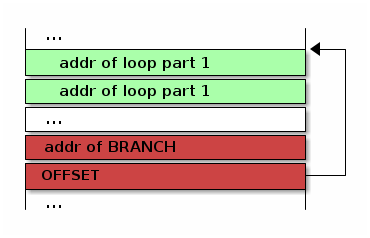
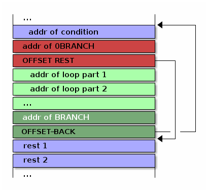
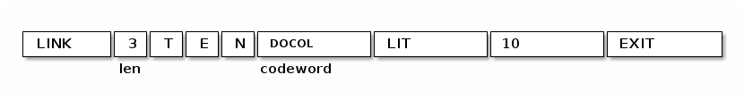

Table of Contents
- Forth-часть
- DIVMOD
- Символьные константы
- NEGATE
- Булевые значения
- LITERAL
- Вычисления во время компиляции
- COMPILE
- RECURSE
- Управляющие выражения
- Циклы
- Unless
- Комментарии
- Стековая нотация
- Печать чисел
- Еще полезные слова
- Строки
- CONSTANT, VARIABLE, VALUE
- Печать словаря ID.
- Забывание FORGET
- Дамп DUMP
- Case
- Декомпилятор: SEE и CFA>
- Токены выполнения
- Исключения
- Строки языка Си
- Сравнение строк
- Аргументы командной строки
- Переменные окружения
- Системные вызовы и файлы
- Forth-ассемблер
- TODO Создание определяющих слов
- TODO Улучшая определяющие слова
- TODO Устройство DODOES
- TODO Устройство DOES>
- TODO Реализация структур
- Call/CC
- Приветствие
- Tangling
Forth-часть
Теперь мы достигли стадии, на которой работает self-hosted Forth. Все дальнейшие слова могут быть записаны как слова Forth, включая такие слова, как IF, THEN, и.т.д., которые на большинстве языков будут считаться весьма фундаментальными.
Некоторые примечания о коде:
Я использую отступы для отображения структуры. Количество пробелов не имеет никакого значения для Forth, кроме того, кроме того, что вы должны использовать по крайней мере один пробельный символ между словами, а сами слова не могут содержать пробелы. Forth чувствителен к регистру. Используйте CAPS LOCK.
DIVMOD
Примитивное слово /MOD (DIVMOD) оставляет как частное, так и остаток в стеке. (В i386
команда idivl дает оба значения). Теперь мы можем определить / и MOD на основе
/MOD и нескольких других примитивов.
: / /MOD SWAP DROP ; : MOD /MOD DROP ;
Символьные константы
Определим некоторые символьные константы и слова:
- Перевод строки
- Пробел
- Возврат каретки
: '\n' 10 ; \ Возврат каретки : BL 32 ; \ BL (BLank) стандартное слово для пробела : CR '\n' EMIT ; \ CR печатает возврат каретки : SPACE BL EMIT ; \ SPACE печатает пробел
NEGATE
NEGATE оставляет на стеке обратное число тому, что было на стеке
: NEGATE 0 SWAP - ;
Булевые значения
Стандартные слова для булевых значений
: TRUE 1 ; : FALSE 0 ; : NOT 0= ;
LITERAL
LITERAL берет то, что находится в стеке (<foo>) и компилирует как LIT <foo>
: LITERAL IMMEDIATE
' LIT , \ компилирует LIT
, \ компилирует сам литерал (из стека)
;
Вычисления во время компиляции
Теперь мы можем использовать [ и ] для вставки литералов, которые вычисляются во
время компиляции. (Вспомните, что [ и ] являются словами Forth, которые
переключаются в и из непосредственного режима.)
В пределах определений используйте [ … ] LITERAL, где "…" - это константное
выражение, которое вы, скорее всего, вычислите один раз (во время компиляции, чтобы не
вычислять его каждый раз, когда выполняется ваше слово).
: ':'
[ \ входим в immediate mode (временно)
CHAR : \ push 58 (ASCII code of ":") в стек параметров
] \ переходим назад в compile mode
LITERAL \ компилируем LIT 58 как определения ':' слова
;
Еще несколько символьных констант определим таким же способом.
: ';' [ CHAR ; ] LITERAL ;
: '(' [ CHAR ( ] LITERAL ;
: ')' [ CHAR ) ] LITERAL ;
: '"' [ CHAR " ] LITERAL ;
: 'A' [ CHAR A ] LITERAL ;
: '0' [ CHAR 0 ] LITERAL ;
: '-' [ CHAR - ] LITERAL ;
: '.' [ CHAR . ] LITERAL ;
COMPILE
При компиляции [COMPILE] word компилирует word, который в ином случае (т.е. без
использования [COMPILE]) был бы немедленно (immediate) выполнен.
Он заносит находит указатель на codeword слова word, заносит его по адресу HERE, а
потом увеличивает HERE на длину указателя.
Так можно скомпилировать такие immediate-слова как IF, ELSE, THEN и.т.п.
: [COMPILE] IMMEDIATE
WORD \ получить следующее слово
FIND \ найти его в словаре
>CFA \ получить его codeword
, \ и скомпилировать его
;
RECURSE
RECURSE делает рекурсивный вызов текущему слову, которое компилируется.
Обычно, когда слово компилируется, оно помечено как HIDDEN, так что ссылки на одно и то же слово внутри являются вызовами предыдущего определения слова (если таковое есть). Однако у нас все еще есть доступ к слову, которое мы сейчас компилируем с помощью LATEST-указателя, поэтому мы можем использовать его для компиляции рекурсивного вызова.
: RECURSE IMMEDIATE
LATEST @ \ LATEST указывает на слово, компилируемое в данный момент
>CFA \ получаем codeword
, \ компилируем его
;
Управляющие выражения
Пока мы определили только очень простые определения. Прежде чем мы сможем идти дальше,
нам нужно сделать некоторые управляющие структуры, например IF ... THEN и LOOP. К
счастью, мы можем определить произвольные структуры управления непосредственно в Forth.
Обратите внимание, что структуры управления, так, как я их определил, будут работать только внутри компилируемых слов. Если вы попытаетесь ввести выражения с использованием IF и.т.д. в непосредственном режиме, то они не будут работать. Выполнение этих операций в непосредственном режиме остается в качестве упражнения для читателя.
Условное выражение вида:
...
condition IF
true-part-1
true-part-2
...
THEN
rest-1
rest-1
...
компилируется в:
Или, в текстовой нотации
... condition 0BRANCH OFFSET-REST true-part-1 true-part-2 ... rest-1 rest-2 ...
где OFFSET-REST - это смещение до rest
Более сложное условное выражение вида:
...
condition IF
true-part-1
true-part-2
...
ELSE
false-part-1
false-part-2
...
THEN
rest-1
rest-2
...
компилируется в:

Или, в текстовой нотации:
... condition 0BRANCH OFFSET true-part-1 true-part-2 ... BRANCH OFFSET2 false-part-2 false-part-2 ... rest-1 rest-2 ...
где OFFSET-FALSE - это смещение до false-part и OFFSET-REST - это смещение до
rest.
Теперь рассмотрим реализацию.
IF - это НЕМЕДЛЕННОЕ слово, которое компилирует 0BRANCH, за которым следует фиктивное смещение (ноль), и помещает адрес этого смещения в стек. Позже, когда мы увидим THEN, мы вытолкнем этот адрес из стека, вычислим смещение и заполним смещение.
В случае, если вместо THEN будет обнаружен ELSE - мы скомпилируем еще один BRANCH, на этот раз безусловный, вкомпилируем второе фиктивное смещение, сохранив его позицию в стеке, а дальше выполним настройку предыдущего фиктивного смещения так, чтобы оно указывало правильное место - т.е. фактически выполним работу THEN.
: IF IMMEDIATE
' 0BRANCH , \ компилировать 0BRANCH
HERE @ \ сохранить позицию смещения в стеке
0 , \ компилировать фиктивное смещение
;
: THEN IMMEDIATE
DUP
HERE @ SWAP - \ рассчитать смещение от адреса сохраненного в стек
SWAP ! \ сохранить смещение в заполненом месте
;
: ELSE IMMEDIATE
' BRANCH , \ определить ветвь до false-part
HERE @ \ сохранить местоположение смещения в стеке
0 , \ компилировать фиктивное смещение
SWAP \ теперь заполнить оригинальное (IF) смещение
DUP \ то же что и для THEN выше
HERE @ SWAP -
SWAP !
;
Циклы
Переходим к циклам:
BEGIN - UNTIL
BEGIN
loop-part-1
loop-part-2
...
condition UNTIL
компилируется в:

Или, в текстовой нотации:
loop-part-1 loop-part-2 condition 0BRANCH OFFSET
где OFFSET указатель обратно на loop-part-1. Это похоже на следующий пример из Си:
do {
loop-part
} while (condition)
Посмотрим, как это реализуется. BEGIN просто запоминаем в стеке точку, на которую надо прыгнуть, а UNTIL компилирует 0BRANCH и использует ее чтобы правильно скомпилировать смещение:
: BEGIN IMMEDIATE
HERE @ \ Сохранить location в стеке
;
: UNTIL IMMEDIATE
' 0BRANCH , \ скомпилировать 0BRANCH
HERE @ - \ рассчитать смещение от сохраненного адреса в стеке
, \ скомпилировать смещение
;
BEGIN - AGAIN
Цикл BEGIN-AGAIN еще проще - в нем нет условия завершения.
BEGIN
loop-part-1
loop-part-2
AGAIN
компилируется в:

Или в текстовой нотации:
loop-part BRANCH OFFSET
где OFFSET указатель обратно на loop-part-1. Другими словами, бесконечный цикл,
который может быть прерван только вызвом EXIT из внутренней части цикла.
Вот как реализовать AGAIN (BEGIN у нас уже есть)
: AGAIN IMMEDIATE
' BRANCH , \ скомпилировать BRANCH
HERE @ - \ вычислить смещение назад
, \ скомпилировать смещение
;
BEGIN - WHILE - REPEAT
Это цикл с предусловием.
BEGIN
condition
WHILE
loop-part-1
loop-part-2
...
REPEAT
rest-1
rest-1
компилируется в:

Или в текстовой нотации:
condition 0BRANCH OFFSET-REST loop-part-1 loop-part-1 BRANCH OFFSET-BACK rest-1 rest1
где OFFSET указывает назад на условие (в начало) и OFFSET2 указывает в конец, на позицию (REST) после всего фрагмента кода. Это похоже на следующий пример из Си:
while (condition) {
loop-part
}
Вот как это реализуется:
: WHILE IMMEDIATE
' 0BRANCH , \ компилировать 0BRANCH
HERE @ \ сохранить позицию offset2 в стеке
0 , \ компилировать фиктивное смещение offset2
;
: REPEAT IMMEDIATE
' BRANCH , \ компилировать BRANCH
SWAP \ взять оригинальное смещение (from BEGIN)
HERE @ - , \ и скомпилировать его после BRANCH
DUP
HERE @ SWAP - \ вычислить offset2
SWAP ! \ и заполнить им оригинальную позицию
;
Unless
UNLESS будет таким же как IF, но тест будет наоборот.
Обратите внимание на использование [COMPILE]: Поскольку IF является IMMEDIATE, мы хотим, чтобы он выполнялся, не пока UNLESS компилируется, а пока UNLESS работает (что случается, когда любое слово, использующее UNLESS, компилируется). Поэтому мы используем [COMPILE] для обращения эффекта, который оказывает пометка IF как IMMEDIATE. Этот трюк обычно используется, когда мы хотим написать собственные контрольные слова, без необходимости реализовывать их, опираясь на примитивы 0BRANCH и BRANCH, а вместо этого используем более простые управляющие слова, такие как (в данном случае) IF.
: UNLESS IMMEDIATE
' NOT , \ скомпилировать NOT (чтобы обратить test)
[COMPILE] IF \ продолжить, вызывав обычный IF
;
Комментарии
Forth допускает комментарии вида (...) в определениях функций. Это работает путем
вызова IMMEDIATE word (, который просто отбрасывает входные символы до тех пор, пока
не попадет на соответствующий ).
: ( IMMEDIATE
1 \ разрешены вложенные комментарии путем отслеживания глубины
BEGIN
KEY \ прочесть следующий симво
DUP '(' = IF \ открывающая скобка?
DROP \ drop ее
1+ \ увеличить глубину
ELSE
')' = IF \ закрывающая скобка?
1- \ уменьшить глубину
THEN
THEN
DUP 0= UNTIL \ продолжать пока не достигнем нулевой глубины
DROP \ drop счетчик
;
Стековая нотация
В стиле Forth мы также можем использовать (... -- ...), чтобы показать эффекты,
которые имеет слово в стеке параметров. Например:
( n -- )означает, что слово потребляет какое-то целое число (n) параметров из стека.( b a -- c )означает, что слово использует два целых числа (a и b, где a находится на вершине стека) и возвращает одно целое число (c).- (–) означает, что слово не влияет на стек
Некоторые более сложные примеры стека, показывающие нотацию стека:
: NIP ( x y -- y ) SWAP DROP ;
: TUCK ( x y -- y x y ) SWAP OVER ;
: PICK ( x_u ... x_1 x_0 u -- x_u ... x_1 x_0 x_u )
1+ \ добавить единицу из-за "u" в стек
4 * \ умножить на размер слова
DSP@ + \ добавить к указателю стека
@ \ и взять
;
\ C помощью циклов мы можем теперь написать SPACES, который записывает N пробелов в stdout
: SPACES ( n -- )
BEGIN
DUP 0> \ пока n > 0
WHILE
SPACE \ напечатать пробел
1- \ повторять с уменьшением пока не 0
REPEAT
DROP \ сбросить счетчик со стека
;
\ Стандартные слова для манипуляции BASE )
: DECIMAL ( -- ) 10 BASE ! ;
: HEX ( -- ) 16 BASE ! ;
Печать чисел
Стандартное слово Forth . (DOT) очень важно. Он снимает число с вершины стека и
печатает его. Однако сначала я собираюсь реализовать некоторые слова Forth более
низкого уровня:
U.R( u width – ) печатает беззнаковое число, дополненное определенной ширинойU.( u – ) печатает беззнаковое число.R( n width – ) печатает знаковое число, дополненное пробелами до определенной ширины.
Например:
-123 6 .R
напечатет такие символы:
<space> <space> - 1 2 3
Другими словами, число дополняется до определенного количества символов.
Полное число печатается, даже если оно шире ширины, и это позволяет нам определить
обычные функции U. и . (мы просто устанавливаем ширину в ноль, зная, что в любом
случае будет напечатано полное число).
Еще одна заминка в функции . и подобных ей - это то, что они подчиняются текущей базе
в переменной BASE. BASE может быть любым в диапазоне от 2 до 36.
Пока мы определяем . мы также можем определить .S которое является полезным
инструментом отладки. Это слово печатает текущий стек (не разрушая его) сверху вниз.
Это основное рекурсивное определение U.:
: U. ( u -- )
BASE @ U/MOD \ width rem quot
?DUP IF \ if quotient <> 0 then
RECURSE \ print the quotient
THEN
\ печатаем остаток
DUP 10 < IF
'0' \ десятичные цифры 0..9 )
ELSE
10 - \ шестнадцатиричные и другие цифры A..Z )
'A'
THEN
+
EMIT
;
Слово .S печатает содержимое стека. Оно не меняет стек. Очень полезно для отладки.
: .S ( -- )
DSP@ \ взять текущий стековый указатель
BEGIN
DUP S0 @ <
WHILE
DUP @ U. \ напечатать элемент из стека
SPACE
WORDSIZE + \ двигаться дальше
REPEAT
DROP \ сбросить указатель
;
Это слово возвращает ширину (в символах) числа без знака в текущей базе
: UWIDTH ( u -- width )
BASE @ / \ rem quot
?DUP IF \ if quotient <> 0 then
RECURSE 1+ \ return 1+recursive call
ELSE
1 \ return 1
THEN
;
: U.R ( u width -- )
SWAP ( width u )
DUP ( width u u )
UWIDTH ( width u uwidth )
ROT ( u uwidth width )
SWAP - ( u width-uwidth )
( В этот момент, если запрошенная ширина уже, у нас будет отрицательное число в стеке.
В противном случае число в стеке - это количество пробелов для печати.
Но SPACES не будет печатать отрицательное количество пробелов в любом случае,
поэтому теперь можно безопасно вызвать SPACES ... )
SPACES
( ... а затем вызвать базовую реализацию U. )
U.
;
.R печатает беззнаковое число, дополненное определенной шириной. Мы не можем просто
распечатать знак и вызвать U.R, потому что мы хотим, чтобы знак был рядом с номером
('-123' а не '- 123').
: .R ( n width -- )
SWAP ( width n )
DUP 0< IF
NEGATE ( width u )
1 ( сохранить флаг, чтобы запомнить, что оно отрицательное | width n 1 )
SWAP ( width 1 u )
ROT ( 1 u width )
1- ( 1 u width-1 )
ELSE
0 ( width u 0 )
SWAP ( width 0 u )
ROT ( 0 u width )
THEN
SWAP ( flag width u )
DUP ( flag width u u )
UWIDTH ( flag width u uwidth )
ROT ( flag u uwidth width )
SWAP - ( flag u width-uwidth )
SPACES ( flag u )
SWAP ( u flag )
IF ( число было отрицательным? печатаем минус )
'-' EMIT
THEN
U.
;
Наконец, мы можем определить слово . через .R, с оконечными пробелами.
: . 0 .R SPACE ;
Реальный U., с оконечными пробелами.
: U. U. SPACE ;
Это слово выбирает целое число по адресу и печатает его.
: ? ( addr -- ) @ . ;
Еще полезные слова
c a b WITHIN возвращает true если a <= c and c < b
или можно определить его без IF : OVER - >R - R> U<
: WITHIN
-ROT ( b c a )
OVER ( b c a c )
<= IF
> IF ( b c -- )
TRUE
ELSE
FALSE
THEN
ELSE
2DROP ( b c -- )
FALSE
THEN
;
DEPTH возвращает глубину стека (в байтах, а не словах)
: DEPTH ( -- n )
S0 @ DSP@ -
WORDSIZE - ( это нужно потому что S0 было на стеке, когда мы push-или DSP )
;
ALIGNED берет адрес и округляет его (выравнивает) к следующей границе слова
: ALIGNED ( addr -- addr )
WORDSIZE 1- + WORDSIZE 1- INVERT AND \ (addr+(wordsize-1)) & ~(wordsize-1)
;
ALIGN выравнивает указатель HERE, поэтому следующее добавленное слово будет правильно выровнено.
: ALIGN HERE @ ALIGNED HERE ! ;
Строки
~ S" string" ~ используется в Forth для определения строк. Это слово оставляет адрес строки и ее длину на вершине стека). Пробел, следующей за ~ S" ~, является нормальным пробелом между словами Forth и не является частью строки.
Это сложно определить, потому что он должен делать разные вещи в зависимости от того, компилируем мы или в находимся немедленном режиме. (Таким образом, слово помечено как IMMEDIATE, чтобы оно могло обнаружить это и делать разные вещи).
В режиме компиляции мы добавляем:
LITSTRING <string length> <string rounded up 4 (or 8) bytes>
к текущему слову. Примитив LITSTRING делает все правильно, когда выполняется текущее слово.
В непосредственном режиме нет особого места для размещения строки, но в этом случае мы помещаем строку по адресу HERE (но мы не изменяем HERE). Это подразумевается как временное местоположение, которое вскоре будет перезаписано.
\ C, добавляет байт к текущему компилируемому слову
: C,
HERE @ C! \ сохраняет символ в текущем компилируемом образе
1 HERE +! \ увеличивает указатель HERE на 1 байт
;
: S" IMMEDIATE ( -- addr len )
STATE @ IF \ (компилируем)?
' LITSTRING , \ ?-Да: компилировать LITSTRING
HERE @ \ сохранить адрес длины слова в стеке
0 , \ фейковая длина - мы ее пока не знаем
BEGIN
KEY \ взять следующий символ строки
DUP '"' <>
WHILE
C, \ копировать символ
REPEAT
DROP \ сбросить символ двойной кавычки, которым заканчивалась строка
DUP \ получить сохраненный адрес длины слова
HERE @ SWAP - \ вычислить длину
WORDSIZE - \ вычесть WORDSIZE потому что мы измеряем от начала длины слова
SWAP ! \ и заполнить длину )
ALIGN \ округлить к следующему кратному байту для оставшегося кода
ELSE \ ?-Нет: немедленный режим
HERE @ \ взять адрес начала временного пространства
BEGIN
KEY
DUP '"' <>
WHILE
OVER C! \ сохраниь следующий символ
1+ \ увеличить адрес
REPEAT
DROP \ сбросить символ двойной кавычки, которым заканчивалась строка
HERE @ - \ вычислить длину
HERE @ \ push начальный адрес
SWAP ( addr len )
THEN
;
~ ." ~ является оператором печати строки в Forth. Пример: ~ ." Something to print" ~ Пробел после оператора - обычный пробел, требуемый между словами, и не является частью того, что напечатано.
В непосредственном режиме мы просто продолжаем читать символы и печатать их, пока не перейдем к следующей двойной кавычки.
В режиме компиляции мы используем ~ S" ~ для хранения строки, а затем добавляем TELL впоследствии:
LITSTRING <string length> <string rounded up to 4 bytes> TELL
Может быть интересно отметить использование [COMPILE], чтобы превратить
непосредственный вызов слова ~ S" ~ в компиляцию этого слова. Он компилирует его в
определение ~ ." ~, а не в определение скомпилированного слова, когда оно выполняется
: ." IMMEDIATE ( -- )
STATE @ IF \ компиляция?
[COMPILE] S" \ прочитать строку и скомпилировать LITSTRING, etc.
' TELL , \ скомпилировать окончательный TELL
ELSE
\ В немедленном режиме просто читаем символы и печаетем им пока не встретим кавычку
BEGIN
KEY
DUP '"' = IF
DROP \ сбросим со стека символ двойной кавычки
EXIT \ возврат из функции
THEN
EMIT
AGAIN
THEN
;
CONSTANT, VARIABLE, VALUE
В Forth глобальные константы и переменные определяются следующим образом:
10 CONSTANT TEN # когда TEN выполняется, он оставляет целое число 10 в стеке VARIABLE THEVAR # когда THEVAR выполняется, он оставляет адрес VAR в стеке
Константы можно читать, но не писать, например:
TEN . CR # печатает 10
Вы можете прочитать переменную (в этом примере, называемую THEVAR), выполнив:
THEVAR @ # оставляет значение THEVAR в стеке THEVAR @ . CR # печатает значение THEVAR THEVAR ? CR # тоже что и строчкой выше, поскольку ? такой же как " @ . "
и обновить переменную, выполнив:
20 THEVAR ! # записывает в THEVAR число 20
Обратите внимание, что переменные неинициализированы (но см. VALUE позже, в котором инициализированные переменные содержат несколько более простой синтаксис).
CONSTANT
Как мы можем определить слова CONSTANT и VARIABLE?
Трюк заключается в том, чтобы определить новое слово для самой переменной (например,
если переменная называлась "VAR", тогда мы бы определили новое слово под названием
VAR). Это легко сделать, потому что мы открыли создание словарных записей через слово
CREATE (часть определения : выше). Вызов WORD TEN CREATE (где TEN означает, что
TEN является следующим вводимым вслед за WORD словом) создает запись словаря:

Для CONSTANT мы можем продолжить это, просто добавив DOCOL (как codeword), затем LIT,
за которым следует сама константа, а затем EXIT, образуя небольшое определение слова,
которое возвращает константу:

Обратите внимание, что это определение слова точно такое же, как и у вас, если бы вы написали
: TEN 10 ;
Примечание для людей, читающих код ниже: DOCOL - это постоянное слово, которое мы определили в ассемблерной части.
: CONSTANT
WORD \ получить имя, которое следует за CONSTANT
CREATE \ создать заголовок элемента словаря
DOCOL , \ добавить DOCOL как codeword поля слова
' LIT , \ добавить codeword LIT
, \ добавить значение, которое лежит на вершине стека
' EXIT , \ добавить codeword EXIT
;
VARIABLE
VARIABLE немного сложнее, потому что нам нужно где-то вставить переменную. Нет ничего особенного в пользовательской памяти (область памяти, на которую указывает HERE, где мы ранее только хранили новые определения слов). Мы можем вырезать кусочки этой области памяти, чтобы сохранить что угодно, поэтому одно возможное определение VARIABLE может создать это:

Чтобы сделать это более общим, давайте определим пару слов, которые мы можем использовать для выделения произвольной памяти из пользовательской памяти.
Первое из них - ALLOT, где n ALLOT выделяет n байтов памяти. (Обратите внимание,
что при вызове ALLOT стоит, убедиться, что n кратно размеру машинного слова, или, по
крайней мере, в следующий раз, когда слово скомпилировано, что HERE осталось кратным
размеру машинного слова).
: ALLOT ( n -- addr )
HERE @ SWAP ( here n )
HERE +! \ добавляем n к HERE, после этого старое значение остается на стеке
;
ALLOT оставляет на стеке старое значение HERE, тобы можно было извлечь указатель на начало выделенной в словаре памяти.
Второе важное слово - CELLS. В Forth выражение n CELLS ALLOT означает выделение n
слов. На 32-битной машине CELLS просто умножает свой аргумент на 4, а на 64-разрядной -
на 8. Мы также добавляем стандартное слово CHARS, которое делает то же для байтов.
: CELLS ( n -- n ) WORDSIZE * ; : CHARS ( n -- n ) 1 * ;
Итак, теперь мы можем легко определить переменную во многом так же, как и CONSTANT выше. См. схему выше, чтобы увидеть, как будет выглядеть слово, которое создает VARIABLE.
: VARIABLE
1 CELLS ALLOT \ выделить ячейку для слова в памяти,
\ сохранив стеке данных значение here на начало выделенной памяти
WORD CREATE \ создать элемент словаря, имя которого следует за VARIABLE
DOCOL , \ добавить DOCOL как поле codeword этого слова
' LIT , \ добавить codeword LIT
, \ добавить указатель на выделенную память
' EXIT , \ добавить codeword EXIT
;
VALUE
VALUE похожи на VARIABLE, но с более простым синтаксисом. Вы обычно используете их, когда вам нужна переменная, которая часто читается, а записывается нечасто.
20 VALUE VAL \ создаем VAL и инициализируем ее значением 20 VAL \ push-им значение переменной VAL (20) в стек 30 TO VAL \ изменяем VAL, устанавливая ее в 30 VAL \ push-им новое значение переменной VAL (30) в стек
Обратите внимание, что VAL сам по себе возвращает не адрес значения, а само значение,
делая значения-VALUE более понятными и приятными для использования, чем
переменные-VARIABLE (избегая косвенности через "@"). Цена этого - более сложная
реализация, хотя, несмотря на сложность, во время исполнения нет штрафа за
производительность.
Наивная реализация TO была бы довольно медленной, каждый раз ей приходилось бы искать
в словаре. Но поскольку это Forth, мы имеем полный контроль над компилятором, чтобы мы
могли бы более эффективно компилировать TO, превращая:
TO VAL
в
LIT <addr> !
и вычислить <addr> (адрес значения) во время компиляциии
Теперь это довольно умно. Мы скомпилируем наше значение следующим образом:

где <value> - это фактическое значение. Обратите внимание, что когда VAL выполняется, он будет выталкивать значение в стек, чего мы и хотим.
Но что будет использовать для адреса <addr>? Разумеется, указатель на этот <value>:
Другими словами, это своего рода самомодифицирующийся код.
(Замечение для людей, которые хотят изменить этот Forth, чтобы добавить инлайнинг: VALUE, определенные таким образом, не могут быть заинлайнены).
: VALUE ( n -- )
WORD CREATE \ создаем заголовок элемента словаря - имя следует за VALUE
DOCOL , \ добавляем DOCOL
' LIT , \ добавляем codeword LIT
, \ добавляем начальное значение
' EXIT , \ добавляем codeword EXIT
;
: TO IMMEDIATE ( n -- )
WORD \ получаем имя VALUE
FIND \ ищем его в словаре
>DFA \ получаем указатель на первое поле данных -'LIT'
WORDSIZE + \ увеличиваем его значение на размер данных
STATE @ IF \ компиляция?
' LIT , \ да, компилировать LIT
, \ компилировать адрес значения
' ! , \ компилировать !
ELSE \ нет, immediate mode
! \ обновить сразу
THEN
;
x +TO VAL добавляет x к VAL
: +TO IMMEDIATE
WORD \ получаем имя значения
FIND \ ищем в словаре
>DFA \ получаем указатель на первое поле данных -'LIT'
WORDSIZE + \ увеличиваем его значение на размер данных
STATE @ IF \ компиляция?
' LIT , \ да, компилировать LIT
, \ компилировать адрес значения
' +! , \ компилировать +!
ELSE \ нет, immediate mode
+! \ обновить сразу
THEN
;
Печать словаря ID.
ID. берет адрес и печатает имя слова, расположенного по этому адресу.
Например: LATEST @ ID. распечатает имя последнего определенного слова
: ID.
WORDSIZE + ( перепрыгиваем через указатель link )
DUP C@ ( получаем байт flags/length )
F_LENMASK AND ( маскируем flags - мы хотим просто получить длину )
BEGIN
DUP 0> ( длина > 0? )
WHILE
SWAP 1+ ( addr len -- len addr+1 )
DUP C@ ( len addr -- len addr char | получаем следующий символ )
EMIT ( len addr char -- len addr | и печатаем его )
SWAP 1- ( len addr -- addr len-1 | вычитаем единицу из длины )
REPEAT
2DROP ( len addr -- )
;
WORD word FIND ?HIDDEN возвращает true, если слово word помечено как скрытое.
WORD word FIND ?IMMEDIATE возвращает true, если слово word помечен как
"немедленное".
: ?HIDDEN
WORDSIZE + ( перепрыгиваем через указатель link )
C@ ( получаем байт flags/length )
F_HIDDEN AND ( маскируем F_HIDDEN флаг и возвращаем его )
;
: ?IMMEDIATE
WORDSIZE + ( перепрыгиваем через указатель link )
C@ ( получаем байт flags/length )
F_IMMED AND ( маскируем F_IMMED флаг и возвращаем его )
;
WORDS печатает все слова, определенные в словаре, начиная с самого последнего слова.
Однако оно не печатает скрытые слова. Реализация просто двигается назад от LATEST с
помощью LINK-указателей.
: WORDS
LATEST @ ( начинаем с LATEST указателя )
BEGIN
?DUP ( пока указатель не null )
WHILE
DUP ?HIDDEN NOT IF ( игнорируем скрытые слова )
DUP ID. ( если не скрытое, то печатаем слово )
SPACE
THEN
@ ( dereference link - идем к следующему слову )
REPEAT
CR
;
Забывание FORGET
До сих пор мы только выделяли память для слов. Forth обеспечивает довольно примитивный метод освобождения.
FORGET word удаляет определение «слова» из словаря и всего, что определено после
него, включая любые переменные и другую память, выделенную после.
Реализация очень проста - мы просматриваем слово (которое возвращает адрес записи словаря). Затем мы устанавливаем HERE, чтобы указывать на этот адрес, так что все будущие распределения и определения будут перезаписывать память, начиная с него. Нам также необходимо установить LATEST, чтобы указать на предыдущее слово.
Обратите внимание: вы не можете FORGET встроенные слова (ну, вы можете попробовать, но это, вероятно, вызовет segfault).
Осторожно: поскольку мы написали VARIABLE, чтобы сохранить переменную в памяти, выделенную до слова, в текущей реализации VARIABLE FOO FORGET FOO приведет к утечке одной ячейки памяти.
: FORGET
WORD FIND ( найти слов и получить его dictionary entry address )
DUP @ LATEST ! ( установить LATEST на указатель предыдущего слова )
HERE ! ( и сохранить HERE как dictionary address )
;
Дамп DUMP
DUMP используется для выгрузки содержимого памяти в "традиционном" формате hexdump.
Обратите внимание, что параметры DUMP (адрес, длина) совместимы со строковыми словами,
такими как WORD и S".
Вы можете выгрузить hexdump для последнего слова, которое вы определили, выполнив что-то вроде:
LATEST @ 128 DUMP
Вот реализация:
: DUMP ( addr len -- )
BASE @ -ROT ( save the current BASE at the bottom of the stack )
HEX ( and switch to hexadecimal mode )
BEGIN
?DUP ( while len > 0 )
WHILE
OVER 8 U.R ( print the address )
SPACE
( print up to 16 words on this line )
2DUP ( addr len addr len )
1- 15 AND 1+ ( addr len addr linelen )
BEGIN
?DUP ( while linelen > 0 )
WHILE
SWAP ( addr len linelen addr )
DUP C@ ( addr len linelen addr byte )
2 .R SPACE ( print the byte )
1+ SWAP 1- ( addr len linelen addr -- addr len addr+1 linelen-1 )
REPEAT
DROP ( addr len )
( print the ASCII equivalents )
2DUP 1- 15 AND 1+ ( addr len addr linelen )
BEGIN
?DUP ( while linelen > 0)
WHILE
SWAP ( addr len linelen addr )
DUP C@ ( addr len linelen addr byte )
DUP 32 128 WITHIN IF ( 32 <= c < 128? )
EMIT
ELSE
DROP '.' EMIT
THEN
1+ SWAP 1- ( addr len linelen addr -- addr len addr+1 linelen-1 )
REPEAT
DROP ( addr len )
CR
DUP 1- 15 AND 1+ ( addr len linelen )
TUCK ( addr linelen len linelen )
- ( addr linelen len-linelen )
>R + R> ( addr+linelen len-linelen )
REPEAT
DROP ( restore stack )
BASE ! ( restore saved BASE )
;
Case
CASE ... ENDCASE - это то, как мы делаем switch в Forth. Для этого нет общего
согласованного синтаксиса, поэтому я реализовал синтаксис, предусмотренный стандартом
ISO Forth (ANS-Forth).
( тут какое то значение положено на стек )
CASE
test1 OF ... ENDOF
test2 OF ... ENDOF
testn OF ... ENDOF
... ( default case )
ENDCASE
Оператор CASE проверяет значение в стеке, проверяя его на равенство с test1,
test2, ..., testN и выполняет соответствующий фрагмент кода внутри OF
... ENDOF. Если ни одно из тестовых значений не совпадает, выполняется случай по
умолчанию (default case). Внутри ..., который принадлежит default case это
значение в стеке все еще находится на вершине стека (оно неявно DROP-нется с помощью
ENDCASE). Когда ENDOF выполняется, он перескакивает на позицию после ENDCASE
(т. e. отсутствует "провал" в следующий кейс и нет необходимости в операторе break,
как в Си).
default case может быть опущен. Фактически tests также могут быть опущены, так что
у вас будет только default case, хотя это, вероятно, не очень полезно.
В качестве примера создадим небольшую программу, которая запрашивает у пользователя
букву и в зависимости от того, что это за буква устанавливает либо переменную-флаг QUIT
либо переменную-флаг SLEEP. Слова ꞌqꞌ и ꞌsꞌ просто пушат значение ASCII-кода буквы
в стек):
: 'q' [ CHAR q ] LITERAL ;
: 's' [ CHAR s ] LITERAL ;
0 VALUE QUIT
0 VALUE SLEEP
: TESTCASE
KEY CASE
'q' OF 1 TO QUIT ENDOF
's' OF 1 TO SLEEP ENDOF
( default case: )
." Sorry, I didn't understand key <" DUP EMIT ." >, try again." CR
ENDCASE
;
Чуть ниже мы подробно рассмотрим, каким именно образом после компиляции TESTCASE станет таким:
: TESTCASE
KEY
'q' OVER = 0BRANCH ( 36 ) DROP LIT 1 LIT 80525B4 ! BRANCH ( 144 )
's' OVER = 0BRANCH ( 36 ) DROP LIT 1 LIT 80525D0 ! BRANCH ( 92 )
S" Sorry, I didn't understand key <" TELL DUP EMIT S" >, try again." TELL CR
DROP
;
В случае, если введенная буква не совпала, 0BRANCH перемещает указатель выполнения на
следующий кейс. В противном случае сначала со стека будет дропнуто значение (которое
положил KEY), потом единица попадет в соответствующую флаговую переменную (QUIT или
EXIT), а потом безусловный BRANCH отправит нас на EXIT (к точке с запятой). Если же ни
один кейс не сработал, то сначала выполнится default case и только потом будет
выполнен DROP. Об этом следует помнить, если необходимо обращаться к стеку в default
case. В нашем примере мы используем такое обращение, чтобы вывести букву, которую
программа "не смогла понять".
В некоторых версиях Forth поддерживаются более продвинутые "tests", такие как диапазоны
и.т.д. В других версиях Forth вам нужно написать OTHERWISE, чтобы указать default
case. Как сказано выше, этот Forth пытается следовать стандарту ANS Forth.
Реализация CASE ... ENDCASE несколько нетривиальна. Я следовал этой реализации:
http://www.uni-giessen.de/faq/archiv/forthfaq.case_endcase/msg00000.html (в данный
момент недоступна)
Общий план состоит в том, чтобы при компиляции выполнить код, как ряд операторов IF:
CASE \ (push 0 on the immediate-mode parameter stack)
test1 OF ... ENDOF \ test1 OVER = IF DROP ... ELSE
test2 OF ... ENDOF \ test2 OVER = IF DROP ... ELSE
testn OF ... ENDOF \ testn OVER = IF DROP ... ELSE
... ( default case ) ... \ ...
ENDCASE \ DROP THEN [THEN [THEN ...]]
Оператор CASE, выполняясь во время компиляции слова, push-ит ноль в качестве "маркера" на стек, и этот маркер используется ENDCASE для подсчета количества инструкций THEN, которые ENDCASE нужно выполнить, чтобы каждому IF-у соответстовал THEN. Как вы понимаете из вышеприведенной реализации, каждый IF при выполнении push-ит значение HERE в стек, и это значение никогда не равно нулю. Поэтому к тому времени, когда компиляция слова дойдет до ENDCASE, стек содержит некоторое количество ненулевых элементов, а затем нулевой "маркер". Число ненулевых элементов соответствует количеству вызовов IF, поэтому столько же раз ENDCASE должен выполнить THEN.
Этот код использует [COMPILE], чтобы вкомпилить вызовы IF, ELSE, THEN, в
immediate-слова OF, ENDOF и ENDCASE. Без этого трюка эти немедленные слова
(IF,ELSE,THEN) были бы вызваны во время компиляции OF, ENDOF и ENDCASE, а не во время
компиляции слов, которые включают в себя OF, ENDOF и ENDCASE. Как и во всех наших
структурах управления, этот трюк с COMPILE работает только в двоеточных определениях
слов, но не работает при непосредстведственном вводе вне этих определений.
Сначала покажем реализацию, а потом проследим за ее работой:
: CASE IMMEDIATE
0 ( пушим нулевой маркер на стек, чтобы посчитать потом количество тест-кейсов )
;
: OF IMMEDIATE
' OVER , ( вкомпиливаем в создаваемое слово OVER )
' = , ( вкомпиливаем в создаваемое слово = )
[COMPILE] IF ( вставляем в OF немедленное слово IF, чтобы вызвать IF когда слово OF выполнится )
' DROP , ( вкомпиливаем в создаваемое слово DROP )
;
: ENDOF IMMEDIATE
[COMPILE] ELSE ( ENDOF это то же что и ELSE )
;
: ENDCASE IMMEDIATE
' DROP , ( вкомпиливаем DROP )
( раз за разом вызываем вкомпиленный THEN пока не достигнем нулевого маркера в стеке )
BEGIN
?DUP
WHILE
[COMPILE] THEN
REPEAT
;
Теперь рассмотрим подробно, как это работает при компиляции вышеприведенного примера, который для наглядности повторим тут:
: TESTCASE
KEY CASE
'q' OF 1 TO QUIT ENDOF
's' OF 1 TO SLEEP ENDOF
( default case: )
." Sorry, I didn't understand key <" DUP EMIT ." >, try again." CR
DUP .
ENDCASE
;
После того, как скомпилен заголовок слова, и в первую ячейку param-field скомпилен
адрес codeword-а слова KEY, начинает работать immediate-слово CASE. Оно ничего не
компилит в слово, только оставляет на стеке ноль в качестве "маркера".
Затем компилится обычное слово ꞌqꞌ, после чего начинает работать immediate-слово
OF. Это слово сначала вкомпиливает OVER и =, а потом вызывает слово IF, которое
вкомпилит 0BRANCH, оставит в стеке текущее значение HERE, а потом вкомпилит фиктивное
смещение (ноль).
На этом этапе у нас в стеке лежат следующие вещи:
- нулевой маркер, который оставило слово CASE
- текущее (на тот момент) значение HERE, которое оставило слово IF
Продолжаем компиляцию. После возвращения из IF-а обратно в OF будет вкомпилено слово
DROP и создаваемое слово приобретет такой вид: "KEY 'q' OBRANCH 0 DROP". На этом
слово OF завершает свою работу и дальше вкомпиливаются литерал "1", и в результате
получается "KEY 'q' OBRANCH 0 DROP LIT 1".
После этого начинает работать immediate-слово TO. В соответствии со своей спецификацией оно:
- считывает из входного потока следующее слово QUIT
- находит его в словаре
- находит его
param-field - затем находит в этом
param-fieldзначение адреса переменной - и, наконец, проверив, что мы в состоянии компиляции, вкомпиливает
адрес переменной как литерал. После чего вкомпиливает
!, то есть STORE.
И теперь компилируемое слово стало таким: "KEY 'q' OBRANCH 0 DROP LIT 1 LIT 80525B4 !",
а следущее слово во входном потоке - ENDOF. Оно немедленно вызывает ELSE. ELSE
вкомпиливает в слово безусловный BRANCH, кладет в стек актуальное значение HERE и стек
выглядит теперь так:
- нулевой маркер, который оставило слово CASE
- текущее (на тот момент) значение HERE, которое оставило слово IF
- актуальное в момент ELSE значение HERE
Потом ELSE меняет местами два последних значения (SWAP) и дублирует то, которое стало верхним. И стек теперь выглядит так:
- нулевой маркер, который оставило слово CASE
- актуальное в момент ELSE значение HERE
- текущее (на тот момент) значение HERE, которое оставило слово IF
- текущее (на тот момент) значение HERE, которое оставило слово IF
После чего ELSE добавляет на стек текущее значение HERE и снова делает SWAP:
- нулевой маркер, который оставило слово CASE
- актуальное в момент ELSE значение HERE
- текущее (на тот момент) значение HERE, которое оставило слово IF
- еще более свежее значение HERE, положеное ELSE
- текущее (на тот момент) значение HERE, которое оставило слово IF
Теперь ELSE вычитает из предпоследнего элемента стека последний, получая то, что мы назовем ELSE-смещение и выполняет еще один SWAP:
- нулевой маркер, который оставило слово CASE
- актуальное в момент ELSE значение HERE
- ELSE-смещение
- текущее (на тот момент) значение HERE, которое оставило слово IF
И, наконец, ELSE делает STORE, что означает "взять со стека адрес, куда будем сохранять, потом взять данные, которые будем сохранять, и сохранить". В результате ELSE-смещение попадает в фиктивное смещение, оставленное IF-ом и слово начинает выглядеть так: "KEY 'q' OBRANCH ELSE-смещение DROP LIT 1 LIT 80525B4 ! BRANCH 0", а стек - так:
- нулевой маркер, который оставило слово CASE
- актуальное в момент ELSE значение HERE
Надо отдельно отметить, что ELSE-смещение указывает за ноль, являющийся смещением
BRANCH. На этом работа ELSE и ENDOF завершена. Следующий кейс компилируется точно таким
же образом, поэтому мы не будем повторяться и просто представим содержимое слова на
момент, когда мы начинаем компилировать default-case:
KEY 'q' OVER = 0BRANCH ( 36 ) DROP LIT 1 LIT 80525B4 ! BRANCH ( 0 ) 's' OVER = 0BRANCH ( 36 ) DROP LIT 1 LIT 80525D0 ! BRANCH ( 0 )
Если обратить внимание на значение смещений при 0BRANCH (36) и разделить его на размер слова (4), то мы получим значение (9), которое точно соответствует началу следующей строки.
Стек в этот момент будет таким:
- нулевой маркер, который оставило слово CASE
- актуальное в момент первого ELSE значение HERE
- актуальное в момент второго ELSE значение HERE
После того как содержимое default-case будет скомпилировано, задача ENDCASE:
- вкомпилить DROP, который сбросит со стека тот операнд, с которым каждый кейс сравнивался
- снимать со стека значение за значением, вызывая для каждого из этих значенией THEN, пока они не закончатся (т.е. будет найден нулевой маркер). THEN рассчитает смещение до текущей позиции и внесет его в BRANCH, в результате чего слово станет таким:
: TESTCASE
KEY
'q' OVER = 0BRANCH ( 36 ) DROP LIT 1 LIT 80525B4 ! BRANCH ( 144 )
's' OVER = 0BRANCH ( 36 ) DROP LIT 1 LIT 80525D0 ! BRANCH ( 92 )
S" Sorry, I didn't understand key <" TELL DUP EMIT S" >, try again." TELL CR
DROP
;
Декомпилятор: SEE и CFA>
CFA> является противоположностью >CFA. Он принимает codeword и пытается найти
подходящее определение словаря. (По правде говоря, он работает с любым указателем на
слово, а не только c указателем на codeword, и это необходимо для вывода
стектрейсов).
В этом Forth это не так просто. Фактически нам приходится искать через словарь, потому
что у нас нет удобного обратного указателя (как это часто бывает в других версиях
Forth). Из-за этого поиска CFA> не следует использовать, когда производительность
критична, поэтому она используется только для инструментов отладки, таких как
декомпилятор и печать стектрейсов.
Это слово возвращает 0, если ничего не находит
: CFA>
LATEST @ ( начнем искать от LATEST )
BEGIN
?DUP ( пока LINK не NULL )
WHILE
2DUP SWAP ( cfa curr curr cfa )
< IF ( curr < cfa? в стеке остается: cfa curr )
NIP ( оставить curr в стеке, а cfa под ним - выкинуть )
EXIT ( выйти из слова, оставив curr )
THEN
@ ( продвигаем curr еще на одно слово назад в словаре )
REPEAT
DROP ( восстановить стек )
0 ( маркер, что ничего не нашли )
;
SEE декомпилирует слово Forth.
Мы ищем dictionary entry слова, затем снова ищем опять для следующего слова (фактически, конец
скомпилированного слова). Это приводит к двум указателям:

С этой информацией мы можем декомпилировать слово. Нам нужно узнавать "мета-слова", такие как LIT, LITSTRING, BRANCH и.т.д. И обрабатывать их особенным образом.
[TODO:gmm] Это слово ловит сегфорт в 64-разрядном форте. Разобраться почему.
: SEE
WORD FIND ( find the dictionary entry to decompile )
( Now we search again, looking for the next word in the dictionary. This gives us
the length of the word that we will be decompiling. (Well, mostly it does). )
HERE @ ( address of the end of the last compiled word )
LATEST @ ( word last curr )
BEGIN
2 PICK ( word last curr word )
OVER ( word last curr word curr )
<> ( word last curr word<>curr? )
WHILE ( word last curr )
NIP ( word curr )
DUP @ ( word curr prev (which becomes: word last curr) )
REPEAT
DROP ( at this point, the stack is: start-of-word end-of-word )
SWAP ( end-of-word start-of-word )
( begin the definition with : NAME [IMMEDIATE] )
':' EMIT SPACE DUP ID. SPACE
DUP ?IMMEDIATE IF ." IMMEDIATE " THEN
>DFA ( get the data address, ie. points after DOCOL | end-of-word start-of-data )
( now we start decompiling until we hit the end of the word )
BEGIN ( end start )
2DUP >
WHILE
DUP @ ( end start codeword )
CASE
' LIT OF ( is it LIT ? )
4 + DUP @ ( get next word which is the integer constant )
. ( and print it )
ENDOF
' LITSTRING OF ( is it LITSTRING ? )
[ CHAR S ] LITERAL EMIT '"' EMIT SPACE ( print S"<space> )
4 + DUP @ ( get the length word )
SWAP 4 + SWAP ( end start+4 length )
2DUP TELL ( print the string )
'"' EMIT SPACE ( finish the string with a final quote )
+ ALIGNED ( end start+4+len, aligned )
4 - ( because we're about to add 4 below )
ENDOF
' 0BRANCH OF ( is it 0BRANCH ? )
." 0BRANCH ( "
4 + DUP @ ( print the offset )
.
." ) "
ENDOF
' BRANCH OF ( is it BRANCH ? )
." BRANCH ( "
4 + DUP @ ( print the offset )
.
." ) "
ENDOF
' ' OF ( is it ' (TICK) ? )
[ CHAR ' ] LITERAL EMIT SPACE
4 + DUP @ ( get the next codeword )
CFA> ( and force it to be printed as a dictionary entry )
ID. SPACE
ENDOF
' EXIT OF ( is it EXIT? )
( We expect the last word to be EXIT, and if it is then we don't print it
because EXIT is normally implied by ;. EXIT can also appear in the middle
of words, and then it needs to be printed. )
2DUP ( end start end start )
4 + ( end start end start+4 )
<> IF ( end start | we're not at the end )
." EXIT "
THEN
ENDOF
( default case: )
DUP ( in the default case we always need to DUP before using )
CFA> ( look up the codeword to get the dictionary entry )
ID. SPACE ( and print it )
ENDCASE
4 + ( end start+4 )
REPEAT
';' EMIT CR
2DROP ( restore stack )
;
Токены выполнения
Стандарт Forth определяет концепцию, называемую "токеном выполнения" (или "xt"), которая очень похожа на указатель функции в Си. Мы сопоставляем токен выполнения с адресом кодового слова.
Существует один ассемблерный примитив для выполнения токенов, EXECUTE (xt –), который
их запускает.
Вы можете сделать токен выполнения для существующего слова длинным путем, используя
>CFA, то есть: WORD FOO FIND >CFA будет push-ить xt для FOO в стек, где FOO -
следующее введенное за WORD слово. Таким образом, очень медленный способ запуска DOUBLE
может быть:
: DOUBLE DUP + ; : SLOW WORD FIND >CFA EXECUTE ; 5 SLOW DOUBLE . CR \ prints 10
Мы также предлагаем более простой и быстрый способ получить токен выполнения любого слова FOO:
['] FOO
Домашнее задание:
- (1) Какая разница между
[']FOO и' FOO? - (2) Как соотносятся ~ '
, ~[']иLIT?
Более полезным является определение анонимных слов и/или присваивание переменным токенов выполнения (xt).
Чтобы определить анонимное слово (и запушить его xt в стеке), используйте: NONAME
...; как в этом примере:
:NONAME ." anon word was called" CR ; \ push-ит xt в стек DUP EXECUTE EXECUTE \ выполянет анонимное слово дважды
Параметры в стеке тоже работают должным образом:
:NONAME ." called with parameter " . CR ; DUP 10 SWAP EXECUTE \ напечатает 'called with parameter 10' 20 SWAP EXECUTE \ напечатает 'called with parameter 20'
Обратите внимание, что вышеупомянутый код создает утечку памяти: анонимное слово все еще компилируется в сегмент данных, поэтому, даже если вы потеряете отслеживание xt, слово продолжает занимать память. Хороший способ отслеживания xt и, таким образом, избежать утечки памяти - назначить его CONSTANT, VARIABLE или VALUE:
0 VALUE ANON :NONAME ." anon word was called" CR ; TO ANON ANON EXECUTE ANON EXECUTE
Еще одно использование :NONAME - создание массива функций, которые можно быстро
вызвать (подумайте о быстром switch например). Этот пример адаптирован из стандарта
ANS Forth:
10 CELLS ALLOT CONSTANT CMD-TABLE : SET-CMD CELLS CMD-TABLE + ! ; : CALL-CMD CELLS CMD-TABLE + @ EXECUTE ; :NONAME ." alternate 0 was called" CR ; 0 SET-CMD :NONAME ." alternate 1 was called" CR ; 1 SET-CMD \ etc... :NONAME ." alternate 9 was called" CR ; 9 SET-CMD 0 CALL-CMD 1 CALL-CMD
Итак, реализуем :NONAME и [']:
: :NONAME
0 0 CREATE ( создаем безымянное слово - нам нужен заголовок записи в словаре )
( потому что ; ожидает его )
HERE @ ( кладем в стек текущее значение HERE, т.е. адрес codeword, т.е. "xt" )
DOCOL , ( вкомпилируем DOCOL как codeword )
] ( переходим в режим компиляции )
;
: ['] IMMEDIATE
' LIT , ( вкомпилировать LIT )
;
Исключения
(об истории появления исключений и и причинах принятых решений можно прочитать тут: CATCH и THROW)
Удивительно, но исключения могут быть реализованы непосредственно в Forth, на самом деле довольно легко.
Общее использование:
: FOO ( n -- ) THROW ;
: TEST-EXCEPTIONS
25 ['] FOO CATCH \ execute 25 FOO, catching any exception
?DUP IF
." called FOO and it threw exception number: "
. CR
DROP \ we have to drop the argument of FOO (25)
THEN
;
\ prints: called FOO and it threw exception number: 25
CATCH запускает токен выполнения и определяет, выбрасывает ли оно какое-либо исключение или нет. Стековая сигнатура CATCH довольно сложна:
( a_n-1 ... a_1 a_0 xt -- r_m-1 ... r_1 r_0 0 ) \ если xt не выбрасывает exception ( a_n-1 ... a_1 a_0 xt -- ?_n-1 ... ?_1 ?_0 e ) \ если xt выбрасывает exception 'e'
где ai и ri - это (произвольное число) аргументов и содержимое стека возврата до и
после того, как xt выполнен с помощью EXECUTE. Обратите внимание, в частности, на
такой случай: когда генерируется исключение, указатель стека восстанавливается так, что
в стеке есть n из something в позициях, где раньше были аргументы a_i. Мы
действительно не гарантируем, что находится в стеке - возможно, исходные аргументы а,
возможно, какая-то другая ерунда - это во многом зависит от реализации слова, которое
выполнялось.
THROW, ABORT и еще несколько других исключений.
Номера исключений - это целые числа, отличные от нуля. По условным обозначениям положительные числа могут использоваться для особых приложений, а отрицательные числа имеют определенные значения, определенные в стандарте ANS Forth. (Например, -1 - это исключение, вызванное ABORT).
0 THROW ничего не делает. Вот стековая сигнатура THROW:
( 0 -- )
( * e -- ?_n-1 ... ?_1 ?_0 e ) \ the stack is restored to the state
\ from the corresponding CATCH
Реализация зависит от определений CATCH и THROW и состояния, разделяемого между ними.
До этого момента стек возвратов состоял только из списка адресов возврата, причем
вершина стека возвратов была адресом возврата на то место, где мы возобновляем
выполнение, когда текущее слово делает EXIT. Однако CATCH будет push-ить более сложный
стековый фрейм исключений в стек возвратов. Стековый фрейм исключений записывает
некоторые вещи о состоянии выполнения в момент вызова CATCH.
Когда THROW вызывается, он идет вверх по стеку возвратов (этот процесс называется "раскруткой"), пока не найдет стековый фрейм исключений. Затем он использует данные в стековом фрейме исключений, чтобы восстановить состояние, позволяющее продолжить выполнение после соответствующего CATCH. (Если он разматывает стек и не находит стековый фрейм исключений, он печатает сообщение и возвращается к приглашению ввода, что также является нормальным поведением для так называемых "непойманных исключений").
Это то, как выглядит стековый фрейм исключений. (Как обычно, стек возвратов растет
вниз, от более младших до более старших адресов памяти, а раскручивается в обратную
сторону).

EXCEPTION-MARKER отмечает эту запись как стековый фрейм исключений, а не обычный обратный адрес, и именно это THROW "замечает", поскольку он разматывает стек. (Если вы хотите внедрить более сложные исключения, такие как TRY … WITH, тогда вам нужно будет использовать другое значение маркера, если вы хотите, чтобы старые маркеры фреймов и новые исключения сосуществовали).
Что произойдет, если исполняемое слово не выбрасывает исключение? Оно, в конце концов, вернется и вызовет EXCEPTION-MARKER, поэтому EXCEPTION-MARKER лучше сделать что-то разумное (чтобы не пришлось менять поведение EXIT. Это красиво дает нам подходящее определение EXCEPTION-MARKER, а именно как функцию, которая просто отбрасывает кадр стека и сама возвращается (таким образом, "возвращается" из исходного CATCH).
Из этого следует, что исключения - относительно легкий механизм в Forth.
: EXCEPTION-MARKER
RDROP ( drop the original parameter stack pointer )
0 ( there was no exception, this is the normal return path )
;
: CATCH ( xt -- exn? )
DSP@ WORDSIZE + >R ( save parameter stack pointer (+wordsize because of xt) on the return stack )
' EXCEPTION-MARKER WORDSIZE + ( push the address of the RDROP inside EXCEPTION-MARKER ... )
>R ( ... on to the return stack so it acts like a return address )
EXECUTE ( execute the nested function )
;
: THROW ( n -- )
?DUP IF ( only act if the exception code <> 0 )
RSP@ ( get return stack pointer )
BEGIN
DUP R0 WORDSIZE - < ( RSP < R0 )
WHILE
DUP @ ( get the return stack entry )
' EXCEPTION-MARKER WORDSIZE + = IF ( found the EXCEPTION-MARKER on the return stack )
WORDSIZE + ( skip the EXCEPTION-MARKER on the return stack )
RSP! ( restore the return stack pointer )
( Restore the parameter stack. )
DUP DUP DUP ( reserve some working space so the stack for this word
doesn't coincide with the part of the stack being restored )
R> ( get the saved parameter stack pointer | n dsp )
WORDSIZE - ( reserve space on the stack to store n )
SWAP OVER ( dsp n dsp )
! ( write n on the stack )
DSP! EXIT ( restore the parameter stack pointer, immediately exit )
THEN
WORDSIZE +
REPEAT
( No matching catch - print a message and restart the INTERPRETer. )
DROP
CASE
0 1- OF ( ABORT )
." ABORTED" CR
ENDOF
( default case )
." UNCAUGHT THROW "
DUP . CR
ENDCASE
QUIT
THEN
;
: ABORT ( -- )
0 1- THROW
;
( Print a stack trace by walking up the return stack. )
: PRINT-STACK-TRACE
RSP@ ( start at caller of this function )
BEGIN
DUP R0 WORDSIZE - < ( RSP < R0 )
WHILE
DUP @ ( get the return stack entry )
CASE
' EXCEPTION-MARKER WORDSIZE + OF ( is it the exception stack frame? )
." CATCH ( DSP="
WORDSIZE + DUP @ U. ( print saved stack pointer )
." ) "
ENDOF
( default case )
DUP
CFA> ( look up the codeword to get the dictionary entry )
?DUP IF ( and print it )
2DUP ( dea addr dea )
ID. ( print word from dictionary entry )
[ CHAR + ] LITERAL EMIT
SWAP >DFA WORDSIZE + - . ( print offset )
THEN
ENDCASE
WORDSIZE + ( move up the stack )
REPEAT
DROP
CR
;
Строки языка Си
Строки Forth представлены начальным адресом и длиной, хранящейся в стеке или в памяти.
Большинство Forth-ов не обрабатывают строки Си, но мы нуждаемся в них, чтобы получить доступ к аргументам процесса и окружению процесса, оставленным в стеке ядром Linux, и сделать некоторые системные вызовы.
| Операция | Input | Output | Forth word | Notes |
|---|---|---|---|---|
| Создание Forth-строк | addr len | S" …" | ||
| Создание C-строк | c-addr | Z" …" | ||
| C -> Forth | c-addr | addr len | DUP STRLEN | |
| Forth -> C | addr len | c-addr | CSTRING | Аллоцируются во |
| временном буфере | ||||
| и должны быть | ||||
| использованы или | ||||
| скопированы сразу. | ||||
| И не должны | ||||
| содержать NULs |
Например, DUP STRLEN TELL печатает строку C.
Z" …" очень похожа на S" …" за исключением того, что строка заканчивается символом ASCII NUL.
Чтобы сделать его более похожим на строку C, во время выполнения Z" просто оставляет
адрес строки в стеке (а не адрес и длину, как S") Чтобы реализовать это, нам нужно
добавить дополнительный NUL в строку, а затем инструкцию DROP. Кроме этого, эта
реализация является лишь модифицированной S".
: Z" IMMEDIATE
STATE @ IF ( compiling? )
' LITSTRING , ( compile LITSTRING )
HERE @ ( save the address of the length word on the stack )
0 , ( dummy length - we don't know what it is yet )
BEGIN
KEY ( get next character of the string )
DUP '"' <>
WHILE
HERE @ C! ( store the character in the compiled image )
1 HERE +! ( increment HERE pointer by 1 byte )
REPEAT
0 HERE @ C! ( add the ASCII NUL byte )
1 HERE +!
DROP ( drop the double quote character at the end )
DUP ( get the saved address of the length word )
HERE @ SWAP - ( calculate the length )
WORDSIZE - ( subtract WORDSIZE (because we measured from the start of the length word) )
SWAP ! ( and back-fill the length location )
ALIGN ( round up to next multiple wordsize bytes for the remaining code )
' DROP , ( compile DROP (to drop the length) )
ELSE ( immediate mode )
HERE @ ( get the start address of the temporary space )
BEGIN
KEY
DUP '"' <>
WHILE
OVER C! ( save next character )
1+ ( increment address )
REPEAT
DROP ( drop the final " character )
0 SWAP C! ( store final ASCII NUL )
HERE @ ( push the start address )
THEN
;
: STRLEN ( str -- len )
DUP ( save start address )
BEGIN
DUP C@ 0<> ( zero byte found? )
WHILE
1+
REPEAT
SWAP - ( calculate the length )
;
: CSTRING ( addr len -- c-addr )
SWAP OVER ( len saddr len )
HERE @ SWAP ( len saddr daddr len )
CMOVE ( len )
HERE @ + ( daddr+len )
0 SWAP C! ( store terminating NUL char )
HERE @ ( push start address )
;
Сравнение строк
Чтобы сравнить две строки, нам потребуется функция, которая на вход принимает длину и адреса этих строк, а на выходе выдает результат сравнения в виде кода возврата и смещений, где сравнение остановилось.
Эта функция может сравнивать Forth-строку со строкой языка Си, оканчивающейся нулем. Визуализировать её работу может дракон схема (substrcmp.drn)

: SUBSTRCMP
\ begin
BEGIN
>R >R
\ cnt is 0?
DUP 0 = IF
DROP R> R>
1 EXIT
THEN
1-
R> R>
\ check-1
2DUP
\ --
\ addr2copy
\ addr1copy
\ addr2
\ addr1
\ maxcnt
C@ 0= IF
DROP \ addr1copy
>R SWAP DROP R>
2 EXIT
THEN
\ check-2
\ --
\ addr1copy
\ addr2
\ addr1
\ maxcnt
C@ 0= IF
>R SWAP DROP R>
3 EXIT
THEN
\ compare
2DUP
\ --
\ addr2copy
\ addr1copy
\ addr2
\ addr1
\ maxcnt
C@ SWAP C@
<> IF
>R SWAP DROP R>
4 EXIT
THEN
1+ SWAP
1+ SWAP
\ go begin branch
AGAIN
;
Аргументы командной строки
Linux делает аргументы командной строки доступными нам, но способ получения различается в зависимости от того, как запускается Forth. Если ассемблерная часть Forth скомпилирована и запускается непосредственно, и без поддержки стандартной библиотеки си, то мы можем получить дступ к аргументам командной строки и переменным окружения, размещенным в стеке. Сначала рассмотрим этот сценарий, а схема работы в том случае, если Forth-код запускается си-кодом будет ниже в этом же разделе.
Указатель вершины стека в сохраняется ранним ассемблерным кодом при запуске Forth в
переменной S0:
... # Записываем вершину стека параметров %esp в переменную S0 mov %esp, (var_S0) ...
Начиная с этого указателя мы можем (в 32-разрядной системе) прочитать аргументы
командной строки и переменные окружения. Сама переменная S0 указывает на argc
(количество аргументов командной строки).
Если размер машинного слова - 4 байта, то S0+4 указывает на argv[ 0 ], S0+8
указывает на argv[ 1 ] etc до argv[ argc-1 ].
argv[ argc ] это NULL указатель.
После этого стек содержит переменные окружения - набор указателей на строки формы NAME=VALUE до тех пор, пока мы не перейдем к другому указателю NULL.
Первое слово, которое мы определяем, ARGC, push-ит количество аргументов командной
строки (обратите внимание, что как и в случае с Сишным argc, аргументы командной
строки включают в себя и имя программы).
: ARGC
S0 @ @
;
n NARGV получаетет "энный" аргумент командной строки
Например, чтобы напечатать имя программы, вы сделали бы:
0 NARGV TELL CR
Вот реализация
: NARGV ( n -- str u )
1+ CELLS S0 @ + ( get the address of argv[n] entry )
@ ( get the address of the string )
DUP STRLEN ( and get its length / turn it into a Forth string )
;
Однако, если мы запускаем ассемблерную Forth-часть с помощью Си, компилятор вставляет
инициализацию библиотеки Си. В этому случае, мы можем получить доступ к argv и
argc, сохранив их, когда стартует сишная функция main():
int main(int argc, char * argv[])
{
forth_asm_argc = argc;
forth_asm_argv = (void*)argv;
...
}
Мы сохраняем их в специальные переменные, которые объявлены в ассемблероной части:
.data
.align 4
.globl forth_asm_argc
forth_asm_argc:
.int 0 # Количество параметров командной строки
.align 4
.globl forth_asm_argv
forth_asm_argv:
.int 0 # Указатель на параметры командной строки
но сишная часть видит эти переменные, потому что в заголовочном файле они определены:
int forth_asm_argc; void *forth_asm_argv;
Ассемблерная часть виртуальной машины содержит примитивы ARGC и ARGV, которые
просто возвращают эти адреса. Напомним, как это выглядит:
defcode "ARGC",4,,ARGC
movq (forth_asm_argc), %eax
push %eax
defcode "ARGV",4,,ARGV
movq (forth_asm_argv), %eax
push %eax
NEXT
Таким образом мы можем переопределить высокоуровневое слово, которое будет возвращать адрес N-ного по счету параметра, переданного в командной строке:
: NARGV ( n -- str u )
1+ CELLS ARGV + ( get the address of argv[n] entry )
@ ( get the address of the string )
DUP STRLEN ( and get its length / turn it into a Forth string )
;
И теперь, используя это слово мы можем вывести все параметры командной строки:
: PRNTCMDARGS
0
BEGIN
DUP ARGC 1- <
WHILE
DUP NARGV TELL CR
1+
REPEAT
DROP
;
Переменные окружения
Если Forth запускается НЕ из сишного кода, то чтобы получить указатель на начало блок переменных окружения нам необходимо:
- Узнать количество параметров командной строки
- Прибавить к этом количеству 2, чтобы перепрыгнуть через имя программы и завершающий нулевой указатель
- Умножить результат на размер слова
- Прибавить это все к
S0
: ENVIRON ( -- addr )
ARGC ( number of command line parameters on the stack to skip )
2 + ( skip command line count and NULL pointer after the command line args )
CELLS ( convert to an offset )
S0 @ + ( add to base stack address )
;
Если Forth запускается из сишного кода, мы должны объявить в заголовочном файле
указатель на указатель с именем envoron и компилятор си позаботится об остальном:
extern char ** environ;
Тогда в низкоуровневой Forth-части мы должны сделать примитив, который возвратит этот указатель:
defcode "ENV",3,,ENV
movq (environ), %eax
push %eax
NEXT
Теперь мы можем сделать высокоуровневое слово ENVIRON, которое возвращает адрес первой строки переменных окружения. Список строк заканчивается нулевым указателем.
Например, чтобы напечатать первую строку переменных окружения, вы могли бы сделать:
ENVIRON @ DUP STRLEN TELL
Чтобы вывести все переменные окружения нам следует получить указатель на начало блока переменных окружения, разименовать его, а далее в цикле:
- вывести строку, оканчивающуюся на ноль
- подсчитать ее длину
- перепрыгнуть завершающий ноль
- прочитать один байт
- если там есть еще один ноль - то завершить цикл, сбросив прочитанный ноль и адрес
- зациклиться
: ENVIRON
ENV @
BEGIN
DUP \ for TELL
DUP STRLEN
TELL CR
\ next
DUP STRLEN + 1+
DUP C@
0= IF
DROP
EXIT
THEN
AGAIN
;
Аналогичным методом мы можем искать в окружении нужную переменную. В качестве примера использования мы могли бы напечатать текущее значение переменной окружения "DESKTOPSESSION=":
: TST S" DESKTOP_SESSION=" ENVLOOKUP DUP STRLEN TELL;
Созадавая слово ENVLOOKUP мы опираемся на SUBSTRCMP, определенный ранее:
: ENVLOOKUP
ENV @
BEGIN
>R 2DUP SWAP R>
DUP >R \ save curr (!)
SUBSTRCMP
1 = IF
>R \ save addr2offset
DROP \ drop addr1offset
2DROP \ drop varlen & varnameaddr
R> \ restore addr2offset
RDROP \ drop curr
EXIT
THEN
2DROP \ drop offsets
R> \ restore curr (!)
\ next
DUP STRLEN + 1+
DUP C@
0= IF
DROP \ curr
2DROP \ varlen & varnameaddr
0 EXIT
THEN
AGAIN
;
Системные вызовы и файлы
Различные слова, связанные с системными вызовами, и стандартный доступ к файлам.
BYE вызывается, вызывая системный вызов выхода Linux (2).
: BYE ( -- )
0 ( return code (0) )
SYS_EXIT ( system call number )
SYSCALL1
;
UNUSED возвращает количество ячеек, оставшихся в пользовательской памяти (в сегменте данных).
Для нашей реализации мы будем использовать системный вызов Linux brk (2), чтобы узнать конец сегмента данных и вычесть HERE из него.
(
: GET-BRK ( -- brkpoint )
0 SYS_BRK SYSCALL1 ( call brk (0) )
;
: UNUSED ( -- n )
GET-BRK ( get end of data segment according to the kernel )
HERE @ ( get current position in data segment )
-
4 / ( returns number of cells )
;
)
MORECORE увеличивает сегмент данных на указанное количество (4-х байтовых) ячеек.
NB. Количество запрошенных ячеек должно быть, как правило, кратным 1024. Причина в том, что Linux не может расширить сегмент данных менее чем на одну страницу (4096 байт или 1024 ячейки).
Этот Forth автоматически не увеличивает размер сегмента данных "по запросу" (т.е. Когда используются (COMMA), ALLOT, CREATE и.т.д.). Вместо этого программист должен знать, сколько места займет большое выделение, проверить UNUSED и вызвать MORECORE, если это необходимо. Простым упражнением для читаетеля является изменение реализации сегмента данных, так что MORECORE вызывается автоматически, если программе требуется больше памяти.
(
: BRK( brkpoint -- )
SYS_BRK SYSCALL1
;
: MORECORE( cells -- )
CELLS GET-BRK + BRK
;
)
Стандарт Forth предоставляет некоторые простые примитивы доступа к файлам, которые мы моделируем поверх системных вызовов Linux.
Главным осложнением является преобразование строк Forth (адрес и длина) в строки Си для ядра Linux.
Обратите внимание, что в этой реализации нет буферизации.
: R/O ( -- fam ) O_RDONLY ;
: R/W ( -- fam ) O_RDWR ;
: OPEN-FILE ( addr u fam -- fd 0 (if successful) | c-addr u fam -- fd errno (if there was an error) )
-ROT ( fam addr u )
CSTRING ( fam cstring )
SYS_OPEN SYSCALL2 ( open (filename, flags) )
DUP ( fd fd )
DUP 0< IF ( errno? )
NEGATE ( fd errno )
ELSE
DROP 0 ( fd 0 )
THEN
;
: CREATE-FILE ( addr u fam -- fd 0 (if successful) | c-addr u fam -- fd errno (if there was an error) )
O_CREAT OR
O_TRUNC OR
-ROT ( fam addr u )
CSTRING ( fam cstring )
420 -ROT ( 0644 fam cstring )
SYS_OPEN SYSCALL3 ( open (filename, flags|O_TRUNC|O_CREAT, 0644) )
DUP ( fd fd )
DUP 0< IF ( errno? )
NEGATE ( fd errno )
ELSE
DROP 0 ( fd 0 )
THEN
;
: CLOSE-FILE ( fd -- 0 (if successful) | fd -- errno (if there was an error) )
SYS_CLOSE SYSCALL1
NEGATE
;
: READ-FILE ( addr u fd -- u2 0 (if successful) | addr u fd -- 0 0 (if EOF) | addr u fd -- u2 errno (if error) )
>R SWAP R> ( u addr fd )
SYS_READ SYSCALL3
DUP ( u2 u2 )
DUP 0< IF ( errno? )
NEGATE ( u2 errno )
ELSE
DROP 0 ( u2 0 )
THEN
;
\ PERROR prints a message for an errno, similar to C's perror (3) but we don't have the extensive
\ list of strerror strings available, so all we can do is print the errno.
: PERROR ( errno addr u -- )
TELL
':' EMIT SPACE
." ERRNO="
. CR
;
Forth-ассемблер
Довольно часто мы бы хотели определять полностью ассемблерные примитивы "изнутри" Forth-системы. Это возможно, потому что мы можем компилировать машинный код "конкатенативным" способом, и кроме того позволяет значительно улучшить переносимость. Например, пример ниже может работать для любой архитектуры процессора.
Сначала мы рассмотрим способ, который позволяет написать и скомпилировать Forth-слово
как ассемблерный примитив. Такое слово будем начинать обычным способом: с двоеточия и
имени слова, но заканчивать не точкой с запятой а словом ;ASMCODE.
Для удобства мы напишем слово NEXT, однако вам никогда не придется использовать его,
потому что ;ASMCODE пользуется им, чтобы поместить машинный код NEXT в конец
компилируемого Forth-ассемблером машинного кода. Для того чтобы иметь возможность
скомпилировать NEXT из Forth-кода мы просто создадим слово, которое побайтово вкомпилит
LODSL | JMP *(%EAX) в создаваемое слово. LODSL ассемблируется как байт AD, а JMP
*(%EAX) как байты FF 20 - это можно увидеть в отладчике или дизассемблере.
: NEXT IMMEDIATE AD C, FF C, 20 C, ; \ NEXT эквивалент
Cлово ;ASMCODE во время своего выполнения должно сделать две очень важные вещи:
добавить к определяемому слову код NEXT и исправить codeword таким образом, чтобы он
указывал не на DOCOL, а на на только что скомпилированный машинный код. Этот
скомпилированный код размещен сразу за codeword и таким образом результат ничем не
будет отличаться от любых других ассемблерных примитивов.
Кроме того, ;ASMCODE делает другие вещи, которые при определении высокоуровневых
примитивов делает ;:
- переключение HIDDEN-флаг
- возврат в IMMEDIATE-режим
Все они подробно описаны в комментариях.
: ;ASMCODE IMMEDIATE
[COMPILE] NEXT \ вставляем NEXT в компилируемое слово
ALIGN \ машинный код собирается побайтово, поэтому его конец
\ может быть не выровнен. А мы хотим чтобы следующее слово
\ начиналось с выровненной границы, поэтому выровняем HERE
LATEST @ DUP \ получить значение LATEST и сделать еще одну его копию в стеке
HIDDEN \ unhide - забирает одно сохраненное значение LATEST из стека
DUP >DFA SWAP >CFA ! \ изменяем codeword чтобы он указывал на param-field
\ (при этом забирается второе значение LATEST из стека)
\ Этот же код, более просто, но менее оптимально можно было бы
\ записать вот так:
\ LATEST @ HIDDEN \ unhide
\ LATEST @ >DFA \ получаем DFA
\ LATEST @ >CFA \ получаем CFA
\ ! \ сохраняем DFA в CFA
[COMPILE] [ \ вставляем в компилируемое слово возврат в immediate режим
;
Остальная часть определений состоит из некоторых immediate-слов, которые ассемблируют машинный код. Только крошечная часть ассемблера i386 написана, достаточная, чтобы написать несколько ассемблерных примитивов в качестве примера ниже. В целях простоты реализации в этом ассемблере сначала записываются аргументы, а потом сама операция - чтобы операция могла извлечь аргументы из стека и ассемблировать свой код.
HEX
<<forth_next>>
<<forth_semi_asmcode>>
\ Регистры и соответтсвующие им значения битов reg
: EAX IMMEDIATE 0 ; \ 000
: ECX IMMEDIATE 1 ; \ 001
: EDX IMMEDIATE 2 ; \ 010
: EBX IMMEDIATE 3 ; \ 011
: ESP IMMEDIATE 4 ; \ 100
: EBP IMMEDIATE 5 ; \ 101
: ESI IMMEDIATE 6 ; \ 110
: EDI IMMEDIATE 7 ; \ 111
: AL IMMEDIATE 0 ; \ 000
: CL IMMEDIATE 1 ; \ 001
: DL IMMEDIATE 2 ; \ 010
: BL IMMEDIATE 3 ; \ 011
: AH IMMEDIATE 4 ; \ 100
: CH IMMEDIATE 5 ; \ 101
: DH IMMEDIATE 6 ; \ 110
: BH IMMEDIATE 7 ; \ 111
\ Стековые инструкции
: PUSH IMMEDIATE 50 + C, ;
: POP IMMEDIATE 58 + C, ;
\ RDTSC опкод
: RDTSC IMMEDIATE 0F C, 31 C, ;
DECIMAL
\ RDTSC является ассемблерным примитивом, который считывает счетчик
\ времени Pentium (который подсчитывает такты процессора). Поскольку
\ TSC имеет ширину 64 бит мы должны push-ить его в стек в два приема
: RDTSC ( -- lsb msb )
RDTSC \ записывает результат в %edx:%eax
EAX PUSH \ push lsb
EDX PUSH \ push msb
;ASMCODE
Режимы адресации
Определение режимов адресации - байт modr/m.
Значение этого байта определяет используемую форму адреса операндов. Операнды могут
находиться в памяти, в одном, или двух регистрах. Если операнд находится в памяти, то
байт modr/m определяет компоненты (смещение, базовый и индексный регистры),
используемые для вычисления его эффективного адреса. В защищенном режиме (это наш
случай) для определения местоположения операнда в памяти может дополнительно
использоваться байт SIB (Scale-Index-Base – масштаб-индекс-база). Байт modr/m
состоит из трех битовых полей:
- поле
mod(биты 7 и 6) - определяет количество байт, занимаемых в команде адресом операнда. Полеmodиспользуется совместно с полемr/m, которое указывает способ модификации адреса операнда смещения в команде.- Если
mod=00(MOD-DISP-NONE), это означает, что поле смещения в команде отсутствует, и адрес операнда определяется содержимым базового и (или) индексного регистра. Какие именно регистры будут использоваться для вычисления эффективного адреса, определяется значением оставшихся битов байта modr/m. - Если
mod=01(MOD-DISP-SHORT), это означает, что поле "смещение" в команде присутствует, занимает 1 байт и модифицируется содержимым базового и (или) индексного регистра. - Если
mod=10(MOD-DISP), это означает, что поле смещение в команде присутствует, занимает 2 или 4 байта (в зависимости от действующего по умолчанию или определяемого префиксом размера адреса) и модифицируется содержимым базового и (или) индексного регистра. - Если
mod=11(MOD-REG-OR-IMM), это означает, что операндов в памяти нет: они находятся в регистрах. Это же значениеmodиспользуется в случае, когда в команде применяется непосредственный операнд;
- Если
- поле
reg(биты 5,4,3) определяет либо регистр, находящийся в команде на месте операнда-приемника (destination), либо возможное расширение кода операции. - поле
r/mиспользуется совместно с полемmodи определяет либо регистр, находящийся в команде на месте первого операнда (еслиmod=11), либо используемые для вычисления эффективного адреса (совместно с полем смещения в команде) базовые и индексные регистры.
Если в команде участвуют два регистра, то поле reg определяет операнд-приемник, а
поле r/m - источник.
HEX : MOD-DISP-NONE 0 ; \ 00---+++ : MOD-DISP-SHORT 40 ; \ 01---+++ : MOD-DISP 80 ; \ 10---+++ : MOD-REG-OR-IMM C0 ; \ 11---+++ : REG-DST ( --+++reg -- --reg000 ) 8 * ; : REG-SRC ( --+++reg -- --+++reg ) ; : TWO-REG ( reg-dst reg-src -- ++regreg ) SWAP REG-DST SWAP REG-SRC + ; : MODR/M ( mod reg -- modr/m ) + ;
Этого уже достаточно, чтобы ассемблировать команду LEA с регистровыми операндами:
: LEA IMMEDIATE
8D C,
TWO-REG MODR/M C,
C,
;
04 MOD-DISP-SHORT EAX ECX LEA => 80523DC 8D 41 04
Или команду MOV, которая работает с базовой регистровой адресацией
: MOV-R32,R/M32 IMMEDIATE
8B C,
TWO-REG MODR/M C,
;
MOD-DISP-NONE EAX EAX MOV-R32,R/M32 => 805247E 8B 00
Байт SIB
Байт масштаба, индекса и базы (Scale-Index-Base - SIB) используется для расширения
возможностей адресации операндов. На наличие байта SIB в машинной команде указывает
сочетание одного из значений 01 или 10 поля mod и значения поля r/m = 100. Байт sib
состоит из трех элементов:
- В поле масштаба
ssразмещается масштабный множитель для индексного компонента index, занимающего следующие три бита байта sib. В поле ss может содержаться значение 1, 2, 4 или 8. При вычислении эффективного адреса на это значение будет умножаться содержимое индексного регистра. - Поле
indexпозволяет хранить номер индексного регистра, содержимое которого применяется для вычисления эффективного адреса операнда. - Поле
baseтребуется для хранения номера базового регистра, содержимое которого также применяется для вычисления эффективного адреса операнда. В качестве базового и индексного регистров могут использоваться большинство регистров общего назначения.
Особый случай - значение поля base = 101 (что соответствует регистру EBP). Это
означает наличие в команде адреса смещения disp32 без базы, если mod = 00 и [EBP] в
противном случае. Такой подход обеспечивает следующие режимы адресации:
- disp32[index], если
mod= 00 - disp8[ebp][index], если
mod= 01 - disp32[ebp][index], если
mod= 10
Поля смещения и непосредственного операнда
Поле смещения в команде - это 8-, 16- или 32-разрядное целое число со знаком, представляющее собой полностью или частично (с учетом приведенных ранее рассуждений) значение эффективного адреса операнда.
Поле непосредственного операнда - необязательное поле, представляющее собой 8-, 16-
или 32-разрядный непосредственный операнд. Наличие этого поля, конечно, отражается на
значении байта modr/m.
Метки
Теперь мы подходим к немного нетривиальному механизму - переходам по меткам. Заведем массив, в котором будем хранить значения меток:
1000 CONSTANT MAXLABELS CREATE LABELS MAXLABELS WORDSIZE * ALLOT
Теперь создадим такие слова:
: LABEL: \ n – WORDSIZE * LABELS + \ на стеке адрес n-й ячейки массива HERE @ SWAP ! \ пишем туда текущее значение HERE ;
: LABEL \ n – a WORDSIZE * LABEL[] + @ ;
Вот как это можно использовать:
1 LABEL: \ записываем метку номер 1 1 LABEL JMP \ используем метку по ее номеру
После исполнения 1 LABEL на стеке окажется ранее записанный для этой метки адрес. В нашем случае это 3. Теперь нам останется реализовать JMP таким образом, чтобы это слово снимало со стека адрес, по которому необходимо сделать переход.
Что делать с переходами вперед? Придется чуть посложнее.
CREATE FORWARD-ADDRS 1000 WORDSIZE * ALLOT CREATE FORWARD-LABELS 1000 WORDSIZE * ALLOT
Два массива нужны потому, что на каждую метку может быть несколько ссылок вперед. Другими словами, в программе может несколько раз встречаться попытка перейти к метке 1, прежде чем встретится метка с этим номером, и станет понятно, куда же мы так активно стремились. Поэтому в один массив мы будем писать адреса, на которых мы "споткнулись", обнаружив, что пока не знаем, куда идти, а в другой — на какую метку мы хотели пойти. Для такой операции придется завести и другое слово.
VARIABLE FREE-SLOT : FORWARD \ n – FIND-FREE-SLOT \ внимание! Это еще не описано FREE-SLOT @ WORDSIZE * FORWARD-LABELS + ! \ сняли со стека номер метки, к которой хотим перейти HERE @ FREE-SLOT @ WORDSIZE * FORWARD-ADDRS + ! \ запомнили адрес, где это произошло HERE @ 2 + C! \ зарезервировали место для адреса ;
Что такое FIND-FREE-SLOT? Это слово, которое лежит несколько в стороне от основной линии изложения, и его желательно реализовать самостоятельно. Оно должно записать в переменную FREE-SLOT индекс ячейки, которую можно занять для новой ссылки вперед. В принципе, можно и просто перемещать указатель, каждый раз занимая новую ячейку, и при памяти современных PC мы еще нескоро добьемся их исчерпания. Однако, если уж подходить правильно, как только мы определим метку с нужным нам номером и впишем все адреса на их места, все записи, относящиеся к этой метке, будут нам не нужны. Поэтому можно инициализировать массив FORWARD-LABEL[] числами -1, считая этот номер признаком свободной ячейки. Слово FIND-FREE-SLOT должно будет пройти по массиву и вернуть номер ячейки, в которой лежит -1.
Что теперь с этим делать, когда мы наконец объявим метку с нужным нам номером? Необходимо будет произвести разрешение метки (в русском языке слово выглядит двусмысленным, но оно происходит не от enabling, а от resolving, т.е. мы не «даем позволение», а «решаем задачу»). Представим, что в какой-то момент мы определили метку, и теперь мы знаем, чему же равен искомый адрес (подсказка для тех, кто забыл, с чего мы начали — для этого достаточно выполнить C^ @). Делаем так.
: ?RESOLVE-REF \ n --
1000 0 DO
FORWARD-LABEL[] I WORDSIZE * + @ OVER = IF \ в этом слоте находится нужная нам метка?
C^ @ \ вот наш адрес
FORWARD-ADDR[] I WORDSIZE * + @ \ а вот место, куда мы его хотели вписать, но еще не знали
! \ пишем
-1 FORWARD-LABEL[] I WORDSIZE * + \ теперь нам этот слот уже не нужен, помечаем его незанятым
THEN
LOOP
DROP
;
Теперь необходимо вернуться немного назад, к слову LABEL. Дело в том, что когда мы определяем метку, следует проверить, не было ли на нее ссылок. Теперь-то адрес стал известен, так вдруг его кто-то с нетерпением ждет? Следовательно, в конце слова LABEL необходимо добавить ?RESOLVE-REF. Соответственно, и LABEL следует переставить по тексту ниже, чтобы не получить ошибку «слово не определено». А рассматривали мы эти механизмы в порядке возрастания сложности, поэтому и LABEL оказались в наши примерах перед более сложным FORWARD.
В кросс-компиляторах можно использовать следующий формат:
1 LABEL: JMP 1 LABEL JMP 2 FORWARD 2 LABEL:
Это означает то, что слово JMP не пытается снять со стека адрес, а просто компилирует машинный код команды перехода. А вот уж потом слово LABEL само допишет нужный адрес. Соответственно, слово FORWARD передвинет указатель свободного места, зарезервировав его под адрес, который будет туда записан словом ?RESOLVE-REF, которое, в свою очередь, вызовется из LABEL:
Инлайнинг
INLINE может использоваться для встраивания примитива ассемблера в текущее (ассемблерное) слово.
Например:
: 2DROP INLINE DROP INLINE DROP ;ASMCODE
построит эффективное ассемблерное слово 2DROP, которое содержит встроенный код
ассемблерной команды для DROP, за которым следует DROP (например, два POP %EAX
инструкции в этом случае).
Другой пример. Рассмотрим это обычное определение Forth:
: C@++ ( addr -- addr+1 byte ) DUP 1+ SWAP C@ ;
Это эквивалентно операции Си "*p++" где p - указатель на char. Если вы заметили, что все слова, используемые для определения C@++, на самом деле являются ассемблерными примитивами, то мы можем написать быстрейшее (но эквивалентное) определение:
: C@++ INLINE DUP INLINE 1+ INLINE SWAP INLINE C@ ;ASMCODE
Для успешного использования INLINE необходимо выполнить несколько условий:
- (1) В настоящее время вы должны определять слово ассемблера (т.е.
: ... ;ASMCODE). - (2) Слово, в котором вы находитесь, должно быть известно как ассемблерное слово. Если вы попытаетесь вставить слово Forth, вы получите сообщение об ошибке.
- (3) Ассемблерный примитив должен быть позиционно-независимым и должен заканчиваться одним NEXT макросом.
Упражнения для читателя:
- (a) Обобщите INLINE, чтобы он мог вставлять слова Forth при построении слов Forth.
- (b) Дальнейшее обобщение INLINE, чтобы оно делало что-то разумное, когда вы пытаетесь встроить Forth-слово в ассемблерное и наоборот.
Реализация INLINE довольно проста. Мы находим слово в словаре, проверяем его как ассемблерное слово, а затем копируем его в текущее определение байтом за байтом, пока не достигнем макроса NEXT (который не копируем).
HEX
: =NEXT ( addr -- next? )
DUP C@ AD <> IF DROP FALSE EXIT THEN
1+ DUP C@ FF <> IF DROP FALSE EXIT THEN
1+ C@ 20 <> IF FALSE EXIT THEN
TRUE
;
DECIMAL
( (INLINE) is the lowlevel inline function. )
: (INLINE) ( cfa -- )
@ ( remember codeword points to the code )
BEGIN ( copy bytes until we hit NEXT macro )
DUP =NEXT NOT
WHILE
DUP C@ C,
1+
REPEAT
DROP
;
: INLINE IMMEDIATE
WORD FIND ( find the word in the dictionary )
>CFA ( codeword )
DUP @ DOCOL = IF ( check codeword <> DOCOL (ie. not a Forth word) )
." Cannot INLINE Forth words" CR ABORT
THEN
(INLINE)
;
HIDE =NEXT
TODO Создание определяющих слов
[TODO:gmm] Внимание, для 64-разрядной версии ассемблерная часть должна быть другой!
Теперь, когда мы умеем заменять codeword и ассемблировать в машинный код, мы можем
пойти дальше и создать такое слово, которое могло бы создавать другие слова таким
образом, чтобы эти дочерние слова имели codeword, который указывает на машинный код,
хранящийся в родительском слове. Вот как это выглядит в памяти:
Это позволяет интерпретировать param-field дочернего слова любым способом, что само
по себе является чрезвычайно мощным методом.
Мы можем рассматривать codeword и param-field (поле параметров), которое идет за
ним, под разными углами:
codeword– это "действие" производимое этим Forth-словом, аparam-field– это данные, над которыми выполняется данное действиеcodeword- это вызов подпрограммы, аparam-field- это параметры (это может быть том числе инлайновый код) размещенные после CALL. Так может смотреть на эти вещи программист на ассемблере.codeword- это единственный "метод" для этого "класса" слов, аparam-fieldсодержит "переменные экземпляра" для этого конкретного слова. Так это выглядит с точки зрения ООП программиста.
Общие особенности проявляются во всех этих точках зрения:
codewordвсегда вызывается с как минимум одним аргументом, а именно, адресомparam-fieldтого слова, которое в данный момент исполняется. Этотparam-fieldможет содержать любое количество параметров.- Имеется сравнительно немного индивидуальных действий, на которые ссылается
codeword. Каждое из этих действий широко распространено (за исключением низкоуровневых слов). - Интерпретация
param-fieldполностью определяется содержимымcodeword, то есть, каждыйcodewordожидает, чтоparam-fieldсодержит определенный вид данных.
Для того, чтобы получить доступ к param-field дочернего слова, нам необходимо
вспомнить реализацию NEXT:
.macro NEXT
lodsl
jmp *(%eax)
.endm
Регистр %ESI - это наш указатель на следующую выполняемую инструкцию. Команда LODSL
загружает в регистр %EAX значение, лежащее по этому указателю и увеличивает %ESI на
размер загруженных данных. А следующая команда JMP, осуществляет переход на значение,
которое лежит по адресу, содержащемуся в %EAX.
Предположим, что мы находимся в вызывающем высокоуровневом коде:
... SWAP CHILD DUP ...
с указателем %ESI на инструкцию CHILD. Мы заканчиваем выполнять инструкцию SWAP и
в данный момент выполняем ее окончание - NEXT. Мы только что выполнили команду LODSL
из NEXT и теперь ситуация такая, как на рисунке ниже.
%ESI, только что указывал указывал на ячейку памяти, содержающую адрес codeword
слова CHILD. Это состояние у нас обозначено %esi(1). После выполнения LODSL он
указывает следующую ячейку, как показано стрелкой, помеченной %esi(2).
В этот момент в регистре %EAX уже лежит адрес codeword слова CHILD. И сейчас JMP
возьмет укзатель по этому адресу и перейдет по указателю, попадая в интерпретатор. В
этот момент, в регистре %EAX останется адрес, указывающий на codeword CHILD. И
чтобы получить адрес начала param-field слова CHILD интерпретатору достаточно просто
увеличить %EAX на размер указателя (4 байта для нашей архитектуры), перепрыгивая
через codeword.
В результате интерпретатор теперь знает, где лежат данные, с которыми ему нужно работать. По окончании своей работы интерпретатор должен выполнить NEXT, чтобы управление было передано слову DUP. Таким образом мы можем представить себе интерпретатор в виде такого кода:
lea 4(%eax), %eax # находим param-field слова CHILD # ... выполняем какие-то действия NEXT # продолжаем выполнение
В качестве простейшего примера интерпретатора, который делает что-то осмысленное, мы
могли бы написать код, который копирует первое значение из param-field в стек
данных. Тогда его код будет таким (в комментариях показан машинный код, в который он
компилируется):
lea 4(%eax), %eax # 8d 40 04 # находим param-field слова CHILD movl (%eax), %eax # 8b 00 # копируем первый параметр из ~param-field~ pushl %eax # 50 # отправляем его в стек NEXT # ad ff 20 # продолжаем выполнение
Для того, чтобы поместить этот интерпретатор в конец определяемого слова, поступим также, как мы поступали ранее, чтобы вкомпилить NEXT: напишем IMMEDIATE-слово, которое вкомпилит интерпретатор его байт за байтом, начиная с того места, куда указывает HERE.
HEX
: (DOCON) IMMEDIATE
8D C, 40 C, 04 C, \ lea 4(%eax), %eax
8B C, 00 C, \ movl (%eax), %eax
50 C, \ pushl %eax
AD C, FF C, 20 C, \ NEXT
;
Отлично, у нас есть интерпретатор в машинном коде, который мы поместим в конец определяющего слова. И мы можем двигаться дальше.
Теперь мы хотим знать, как построить родительское слово, которое умеет создавать дочерние слова, содержащие произвольные данные в поле параметров.
Нам нужно понимать, что родительское слово, как и любое другое, имеет 2 фазы работы.
- В первой фазе родительское слово компилируется. В этой фазе мы дожны создать обе
части родительского слова:
- Ту, которая будет создавать дочерние слова
- Ту, которая будет служить интерпретатором для дочерних слов
- Во второй фазе родительское слово исполняется. В этой фазе компилируется дочернее слово.
Рассмотрим сначал вторую фазу. Когда родительское слово исполняется, чтобы скомпилировать дочернее слово, оно должно:
- Получить из входного потока имя дочернего слова (с помощью WORD)
- Создать слованый заголовок дочернего слова (используя CREATE)
- Вкомпилировать в дочернее слово такой
codeword, чтобы он указывал на интерпретатор, размещенный в родительском слове. - Сформировать
param-fieldдочернего слова (например, взяв параметры из стека) - Выполнить EXIT, чтобы вернуть управление
В первой фазе, когда родительское слово компилируется, необходимо:
- определить в родительском слове адрес, где будет размещен интерпретатор
- скомпилировать ту часть родительского слова, которая выполняет всю вторую фазу
- скомпилировать собственно интерпретатор.
Для того, чтобы вычислить адрес интерпретатора, на стадии, когда родительское слово
компилируется мы ненадолго перейдем в immediate-режим. Выполнив расчет, мы вкомпилим
результат как константу (за словом LIT) в родительское слово, что даст нам возможность
использовать его, на стадии, когдаa родительское слово исполняется, чтобы настроить
codeword дочернего слова.
Сейчас мы построим таким образом родительское слово DEFCONST, которое будучи
вызванным как:
1337 DEFCONST PUSH1337
создает новое слово PUSH1337, которое будет вести себя, как если бы оно было определено как:
: PUSH1337 1337 ;
: DEFCONST
WORD \ прочтем слово с stdin
CREATE \ создадим заголовок слова
0 , \ вместо codeword вкомпилим заглушку-ноль
, \ скомпилируем param-field взяв его со стека (в нашем примере - 1337)
[COMPILE] [ \ вкомпилить в DEFCONST переход в immediate-режим
\ Здесь, во время определения слова DEFCONST мы можем
\ вычислить начало ассемблерного кода, вкомпилив его адрес как литерал
\ чтобы во время выполнения DEFCONST заменить codeword создаваемого
\ дочернего слова на адрес машинного кода
LIT
[ \ Ненадолго переходим в IMMEDIATE-режим - compile-time вычисления
HEX
HERE @ 6 WORDSIZE * +
\ Вычисляем адрес начала машинного кода относительно HERE:
\ сейчас будет вкомпилен вычисленный адрес, потом
\ еще 5 команд, всего 6, умножаем на размер машинного слова
, \ И вкомпиливаем его в DEFCONST
] \ Возврат из IMMEDIATE-режима
LATEST @ >CFA \ получаем CFA дочернего слова
! \ сохраняем адрес начала машинного кода в codeword дочернего кода
EXIT \ вкомпилить в DEFCONST вызов слова EXIT,
\ чтобы при исполнении DEFCONST осуществить возврат.
(DOCON) \ А дальше "немедленно" вкомпилить машинный код
;
Вот как выглядят оба слова в памяти 32-разрядной машины (в четный строчках показаны комментарии, где нижним подчеркиванием обозначено выравнивание):
8051DBC 3C 1D 05 08 08 44 45 46 43 4F 4E 53 54 00 00 00 <....DEFCONST...
[LINK-----] len D E F C O N S T __ __ __
8051DCC 88 8B 04 08 B0 96 04 08 3C 97 04 08 08 97 04 08 ........<.......
[CODEWORD!] [WORD=====] [CREATE===] [[COMPILE]]
8051DDC 00 00 00 00 48 97 04 08 48 97 04 08 54 97 04 08 ....H...H...T...
[,-COMMA==] [,-COMMA==] [LBRAC====]
8051DEC 08 97 04 08 08 1E 05 08 4C 92 04 08 14 96 04 08 ........L.......
[LIT======] [=8051E08=] [LATEST===] [@-FETCH==]
8051DFC D0 96 04 08 08 96 04 08 FC 95 04 08 8D 40 04 8B .............@..
[>CFA=====] [!-STORE==] [EXIT=====] [===docon==
8051E0C 00 50 AD FF 20 FC 95 04 08 BC 1D 05 08 08 50 55 .P.. .........PU
==asmcode====] [EXIT=====] [LINK-----] len P U
8051E1C 53 48 31 33 33 37 00 00 08 1E 05 08 37 13 00 00 SH1337......7...
S H 1 3 3 7 __ __ [=8051E08=]
TODO Улучшая определяющие слова
[TODO:gmm] Внимание, для 64-разрядной версии ассемблерная часть должна быть другой!
Теперь, когда мы знаем, как создаются определяющие слова, настало время расширить их функционал и сделать более удобным их создание. Вместо компиляции машинного кода интерпретатора, мы будем использовать Forth-ассемблер. Попробуем переписать наш DEFCONST по-новому:
: DEFCONST
WORD \ прочтем слово с stdin
CREATE \ создадим заголовок слова
0 , \ вместо codeword вкомпилим заглушку-ноль
, \ скомпилируем param-field взяв его со стека (в нашем примере - 1337)
;CODE \ завершить высокоуровневый код и начать низкоуровневый
04 MOD-DISP-SHORT EAX EAX LEA \ LEA 4(%EAX), %EAX
MOD-DISP-NONE EAX EAX MOV-R32,R/M32 \ MOV (%EAX), %EAX
EAX PUSH \ PUSH %EAX
NEXT \ NEXT
END-CODE \ завершить ассемблерное определение
В этом примере Forth слово состоит из двух частей.
- Все от
: DEFCONSTдо;CODE- высокоуровневый Forth-код, исполняемый при вызове слова родительского слова. - Все от
;CODEдоEND-CODE- это машинный код, исполняемый, когда дочернее слово исполняется. То есть, все начиная с;CODEдоEND-CODE– это интерпретатор, на который будут указыватьcodeword-ы дочерних слов.;CODEозначает что высокоуровневая часть слова закончилась (";") и начинается определение в машинном коде. И нам больше не нужно создавать специальное слово для того чтобы вкомпилить интерпретатор в машинном коде.
От предыдущего варианта здесь есть два важных отличия:
- определение теперь завершается не
;а словом END-CODE - слово
;CODEберет на себя всю работу, которую предыдущее определение делало вручную.
END-CODE отличается от ; только тем, что не добавляет в определение слово
EXIT. Вот его реализация:
: END-CODE ( -- ) \ Завершить ассемблерное определение
LATEST @ HIDDEN EXIT
; IMMEDIATE
Как работает слово ;CODE?
Разделим этапы выполнения на три "последовательности", которые позволяют понять работу определяющих слов:
- Первая последовательность, когда родительское слово компилируется. Это включает и
высокоуровневую часть определения и ассемблерную, то есть момент включения
родительского слова в словарь. Как мы дальше увидим,
;CODE- это директива компилятора, исполняемая во время определения первой последовательности. Она вкомпилит в родительское слово(;CODE). - Вторая последовательность, когда родительское слово исполняется, а дочернее слово
компилируется. То есть, когда в словаре создается дочернее слово. Во время второй
последовательности выскоуровневая часть родительского слова исполняется, в том числе
слово
(;CODE). - Третья последовательность, когда дочернее слово исполняется . В это время
исполняется интерпретатор, размещенный в родительском слове. Он использует
param-fieldдочернего слова, откуда был вызван.
Слова ;CODE и (;CODE) делают следующее:
;CODEисполняется во время первой последовательности. Это пример Forth-слова немедленного исполнения – слово исполняется во время компиляции Forth-кода.;CODEделает три вещи:- (a) компилирует в код определяемого DEFCONST слово
(;CODE) - (b) выключает режим компиляции
- (c) запускает Forth-ассемблер.
- (a) компилирует в код определяемого DEFCONST слово
(;CODE)– это часть родительского слова, поэтому оно исполняется во время второй последовательности, то есть во время исполнения родительского слова. Оно выполняет следующие действия:- (a) возвращает адрес машинного кода, который следует сразу за ним. Это выполняется за счет pop-а адреса со стека возвратов.
- (b) компилирует этот адрес в
codewordтолько что определенного (с помощью CREATE) слова, которое находит при помощи LATEST. - (c) выполняет действие слова
EXITтак, чтобы интерпретатор Forth не пытался выполнить машинный код. Это высокоуровневый "выход из подпрограммы", который завершает Forth-определение.
Вот пример реализации:
: ;CODE
' (;CODE) , \ вкомпилить (;CODE) в определение
[COMPILE] [ \ вкомпилить переход в immediate-режим
\ ASSEMBLER \ включить ассемблер (пока он всегда включен)
; IMMEDIATE \ Это слово немедленного исполнения!
: (;CODE)
R> \ pop-ит адрес машинного кода со стека возвратов
LATEST @ >CFA \ берет адрес codeword последнего слова
! \ сохраняет адрес машинного кода в codeword создаваемого слова
;
Из них более необычный - это (;CODE). Поскольку это высокоуровневое определение,
адрес, на который произойдет переход после завершения родительского слова
(высокоуровневый адрес возврата) - push-ится на стек возвратов. Поэтому, выталкивание
из стека возвратов изнутри (;CODE) приведет к получению адреса машинного кода. Кроме
того, выемка этого значения из стека возвратов будет "обходить" один уровень
подпрограммного выхода, таким образом, что когда (;CODE) выйдет, это будет выход в
слово вызывающее DEFCONST. Это эквивалентно возврату в DEFCONST и затем сразу выходу
из DEFCONST.
TODO Устройство DODOES
Мы уже рассмотрели, как заставить дочернее Forth-слово исполнить выбранный фрагмент
машинного кода и как передать этому фрагменту кода адрес param-field слова. Но как
можно написать этот машинный код на высокоуровневом Forth? Для этого нам необходимо
написать подпрограмму в машинном коде, которая сможет запустить высокоуровневый код. Мы
называем эту подпрограмму DODOES. При этом должны быть разрешены три проблемы:
- (a) как найти адрес высокоуровневого кода, ассоциируемого с этим Forth-словом?
- (b) как мы будем (из машинного кода) вызывать Forth-интерпретатор для высокоуровневой подпрограммы действия?
- (c) Как мы будем передавать этой высокоуровневой подпрограмме адрес
param-fieldдля исполняемого в этот момент дочернего слова?
Ответ на вопрос (с) – как передавать аргумент в высокоуровневое Forth-слово - прост. На
стеке данных, конечно же. Наша машинная подпрограмма должна push-ить адрес
param-field на стек перед тем, как вызвать высокоуровневый код. Из нашей предыдущей
работы мы знаем, как подпрограмма в машинном коде может получить адрес param-field.
Ответ на (b) несколько сложнее. Мы хотим сделать что-то похожее на Forth-слово
EXECUTE, которое вызывает Forth-слово или, возможно, DOCOL, который вызывает слово,
определенное через двоеточие. Оба этих механизма относятся к числу наших ключевых
слов. DODOES будет иметь с ними сходство.
Вопрос (a) самый сложный. Куда поместить адрес высокоуровневой подпрограммы?
Вспомните, codeword НЕ указывает на высокоуровневый код, оно должно указывать на
машинный код. Два подхода использовались ранее:
- Fig-Forth решение. Fig-Forth резервирует первую ячейку в
param-fieldдля хранения адреса высокоуровневого кода.DODOESвпоследствии извлекает адресparam-field, push-ит адрес реальных данных (обычно следующих за первой ячейкой) на стек данных, извлекает адрес высокоуровневой подпрограммы и исполняет ее.
С этим решением связаны две проблемы. Во-первых, структура поля параметров различна в
низкоуровневых и высокоуровневых словах. К примеру, DEFCONST, будучи определено в
машинном коде, будет хранить свои данные в param-field, в то время, как оно же,
определенное в высокоуровневом коде будет хранить свои данные, по адресу равному
param-field + 1ячейка. Во-вторых, каждое объявление высокоуровневого действия
приводит к дополнительному расходу одной ячейки памяти. То есть, если DEFCONST
использует высокоуровневое действие, каждая вновь созданная в программе константа будет
больше на одну ячейку!
К счастью, хорошие Forth-программисты быстро изобрели решение, которое побороло эти проблемы, и решение fig-Forth было забыто.
- Современное решение. Большинство Фортов сегодня объединяет различные фрагменты
машинного кода с каждой высокоуровневой процедурой действия. Поэтому,
высокоуровневые константы будут иметь собственный
codeword, указывающий на фрагмент машинного кода, чья единственная функция - вызвать высокоуровневое действие DEFCONST.codewordпеременной указывает на процедуру "запуска" для высокоуровневого действия VARIABLE и.т.п.
Чрезмерное ли это повторение кода? Нет, потому что каждый такой фрагмент машинного
кода - лишь подпрограммный вызов на обычную общую подпрограмму DODOES. Адрес
высокоуровневого кода в DODOES кладется сразу после инструкции CALL DODOES. DODOES
может затем pop-нуть адрес с процессорного стека, чтобы получить этот адрес.
Фактически, мы делаем еще два упрощения. Высокоуровневый код расположен сразу за инструкцией CALL. Поэтому DODOES может извлечь этот адрес прямо с процессорного стека. И поскольку мы знаем, что это высокоуровневый Forth-код, мы можем просто встроить все что делает DOCOL в DODOES.
Теперь, каждое дочернее слово просто указывает на кусочек машинного кода, а в его
param-field место не расходуется. Этот кусочек машинного кода - CALL-инструкция
ведущая на процедуру DODOES, за которой расположен высокоуровневый код.
Это, несомненно, наиболее закрученная программная логика во всем ядре Forth! Так давайте посмотрим, как это реализуется на практике.

Когда адресный интерпретатор встречает CHILD (то есть, когда %ESI указывает на CHILD в
верхнем левом углу) он выполняет обычную вещь: извлекает адрес, хранящийся в codeword
CHILD, и передает на него управление. По этому адресу находится инструкция CALL
DODOES, поэтому второй переход (в этот раз call-вызов) передает управление DODOES,
который затем должен произвести следующие действия:
- (a) Push-нуть адрес
param-fieldслова CHILDна стек данныхдля последующего использования в высокоуровневой подпрограмме. Инструкция CALL в момент своего выполнения не изменяет никаких регистров, поэтому мы ожидаем обнаружить адресparam-fieldслова CHILD, вычислив%EAX+4. - (b) Добыть адрес высокоуровневой подпрограммы, pop-нув его из стека CPU. Это адрес высокоуровневого кода.
- (c) сохранить старое значение указателя интерпретации
%esi(2)на стеке возвратов. C этого момента регистр %ESI будет использоваться при исполнении высокоуровневого фрагмента кода. По существу, DODOES должен использовать %ESI, подобно тому, как это делает DOCOL. - (d) положить адрес высокоуровневого слова в %ESI (это
%ESI(dodoes)на рисунке) - (e) выполнить NEXT для продолжения интерпретации высокоуровневого кода с нового места.
DODOES может быть написан следующим образом:
DODOES:
PUSHRSP %esi ;; (с) Сохраняем ESI на стеке возвратов
pop %esi ;; (b,d) CALL-RETADDR -> ESI
lea 4(%eax), %eax ;; (a) вычислить param-field DEUX
pushl %eax ;; (a) push его на стек данных
NEXT ;; (e) вызвать интерпретатор
Эти операции идут немного в другом порядке, потому что мы используем стек CPU как стек данных. Но пока правильные данные уходят на правильные стеки (или в правильные регистры) в правильное время, точная последовательность операций не критична. В этом случае мы учитываем, что старое значение %ESI должно быть push-нуто на стек возвратов перед извлечением нового %ESP из стека CPU.
TODO Устройство DOES>
Мы изучили, как создавать новое Forth-слово с помощью ;CODE, хранящее произвольные
данные в поле параметров, и как менять указатель в поле кода на новый фрагмент
машинного кода. Как можно компилировать высокоуровневые слова, и делать так, чтобы
новое слово ссылалось на него?
Ответ содержится в двух словах DOES> и (DOES>), которые являются высокоуровневым
эквивалентом слов ;CODE и (;CODE). Чтобы их понять, давайте посмотрим на пример их
использования:
: MAKE-CONST ( n -- )
WORD \ прочтем слово с stdin
CREATE \ создадим заголовок слова
0 , \ вместо codeword вкомпилим заглушку-ноль
, \ скомпилируем param-field взяв его со стека (в нашем примере - 1337)
DOES> \ завершение "создающей" части, начало части "действия"
@ \ прочесть значение из param-field дочернего слова,
\ разыменовать для получения содержимого
;
Сравните это с предыдущим примером ;CODE и заметьте, что DOES> выполняет функцию,
аналогичную ;CODE. Во время исполнения MAKE-CONST будет работать все то, что
определено между MAKE-CONST и DOES>. Это код, который формирует поле параметров
дочернего слова. А во время исполнения дочернего слова будет работать все то, что
определено от DOES> до ;, то есть высокоуровневый код. Так как с ;CODE оба
класса: порождающий и действия содержатся внутри тела родительского Forth-слова, как
показано на рисунке:
Пересмотрите последовательности о которых мы говорили. Слова DOES> и (DOES>) делают
следующее:
DOES> исполняется в первой последовательности, когда компилируется MAKE-CONST. Таким
образом DOES> - это Forth-слово немедленного исполнения, оно делает следующие две
вещи:
- (a) компилирует Forth-слово
(DOES>)в MAKE-CONST. - (b) компилирует машинный код
CALL DODOESв MAKE-CONST.
Замечу, что DOES> оставляет Forth-компилятор включенным, для последующей компиляции
высокоуровневого фрагмента, следующего за ним. Так же, даже если CALL DODOES не
является Forth-кодом, слова немедленного исполнения, такие как DOES> могут
компилироваться в середину Forth-определения.
(DOES>) является частью слова MAKE-CONST, поэтому оно исполняется, когда MAKE-CONST
исполняется (вторая последовательность). Оно делает следующее:
- (a) получает адрес машинного кода, который следует сразу за
CALL DODOES, с помощью выталкивания старого указателя инструкций со стека возвратов Forth - (b) этот адрес записывается в
codewordтолько что определенного с помощью CREATE слова. - (c) выполняется действие EXIT, заставляющее MAKE-CONST завершить выполнение, не допуская исполнения следующего фрагмента кода (который выполняется в момент вызова созданной константы).
Как видим, действие (DOES>) идентично (;CODE), поэтому отдельное слово не
обязательно. Я буду использовать (;CODE) с этого момента вместо (DOES>).
Мы уже определили (;CODE). Определение DOES>:
: DOES>
' (;CODE) , \ вкомпилить (;CODE) в определение
0E8 C, \ вкомпилить байт опкода CALL
DODOES_ADDR HERE @ WORDSIZE + - , \ относительное смещение к DODOES
; IMMEDIATE
где DODOES_ADDR - константа, которая хранит адрес подпрограммы DODOES. В случае
i386 инструкция CALL ожидает относительный адреc - отсюда арифметика использующая
DODOES_ADDR и HERE.
Кто мог подумать, что несколько строчек кода потребуют такого количества пояснений?
Именно поэтому я восхищаюсь ;CODE и DOES> так сильно. Я никогда ранее не видел
таких запутанных, мощных и гибких конструкций, закодированных с подобной экономией.
TODO Реализация структур
Программисты, освоившие в начале своей карьеры язык Си, не могут представить себе
программирование без структур, и часто чувствуют себя беспомощными, если какой-то язык
их не предоставляет. Реализация структур - не только хороший пример самостоятельного
расширения языка, но и демострация мощи и простоты DOES>, который мы описали в
предыдущем разделе.
Мы бы хотели иметь возможность объявлять структуры так :
STRUCT foo
4 CHARS FIELD alfa
3 CELLS FIELD beta
2 CELLS FIELD gamma
END-STRUCT
Пусть после вызова foo в стеке остается размер структуры. Тогда, чтобы
зарезервировать место под элемент списка надо выполнить выделение памяти с помошью
ALLOT:
foo ALLOT
После выполнения ALLOT в стеке будет оставлен адрес foo.
Начнем с наивной реализации слова FIELD:
: FIELD \ n ++ n ; объявляем n как смещение в структуре
DUP CONSTANT
;
В этой реализации, когда мы выполняем 4 FIELD alfa это приводит к созданию константы
с именем alfa и значением 4, которое является смещением поля. Мы могли бы вычислить
размер всех полей структуры вот таким образом:
0 \ Начальное смещение FIELD ALFA \ Создана константа ALFA со значением 0 4 CHARS + \ размер поля ALFA FIELD BETA \ Создана константа BETA со значением 4 3 CELLS + \ размер поля BETA FIELD GAMMA \ Создана константа GAMMA со значением 19 2 CELLS + \ размер поля GAMMA \ В стеке осталось значение 27 - это размер всей структуры
В результате этого кода полный размер записи остается в стеке. Его можно тоже сохранить в константе:
CONSTANT FOO-SIZE
и использовать потом для создания именованной записи словаря, в которой будут храниться поля структуры. Однако в таком подходе приходится писать много лишних слов, и можно незаметно для самого себя допустить ошибку, например, забыв где-то знак плюс. Мы можем улучшить это, если определим FIELD с использованием DOES>:
: FIELD ( # n ++ # ) \ Определение FIELD со смещением "#" и размером "n"
WORD \ прочтем слово с stdin
CREATE \ создадим заголовок слова
0 , \ вместо codeword вкомпилим заглушку-ноль
OVER \ push-им копию размера # на вершину стека (# n # --)
, \ скомпилируем размер в param-field взяв его со стека (# n --)
+ \ сложим размер с текущим смещением
DOES>
@ \ разыменовать значение из param-field дочернего слова, чтобы получить размер #
+ \ и сложить его с вершиной стека
;
Здесь мы подразумеваем, что перед вызовом FIELD на стеке лежат два значения:
- текущий размер структуры, который мы обозначили как #
- размер создаваемого поля
В этой реализации FIELD создает дочернее слово, codeword которого ссылается на код,
определенный за DOES>. Этот код получает в стеке адрес param-field дочернего слова. В
каждом из дочерних слов там лежит текущее смещение. При выполнении дочернего слова это
смещение будет сложено с вершиной стека. Мы подразумеваем, что на вершине стека будет
лежать адрес начала всей структуры. Теперь мы можем писать более кратко:
0 \ Начальное смещение 4 CHARS FIELD ALFA \ Создана константа ALFA со значением 0 3 CELLS FIELD BETA \ Создана константа BETA со значением 4 [0+4] 2 CELLS FIELD GAMMA \ Создана константа GAMMA со значением 16 [4+(3*4)] (0x10) \ В стеке осталось значение 24 [16+(2*4)] - это размер всей структуры (0x18) \ Сохраним его в константу CONSTANT FOO-SIZE
Может быть полезным (и мы увидим это дальше) вынести процедуру действия в отдельное слово DOFIELD:
: DOFIELD \ Действие FIELD
DOES>
@ \ разыменовать значение из param-field дочернего слова, чтобы получить размер #
+ \ и сложить его с вершиной стека
;
: FIELD ( # n ++ # ) \ Определение FIELD со смещением "#" и размером "n"
WORD \ прочтем слово с stdin
CREATE \ создадим заголовок слова
0 , \ вместо codeword вкомпилим заглушку-ноль
OVER \ push-им копию размера # на вершину стека (# n # --)
, \ скомпилируем размер в param-field взяв его со стека (# n --)
+ \ сложим размер с текущим смещением
DOFIELD
;
Теперь мы можем аллоцировать память для структуры и сохранить указатель на нее, например в константу вот так:
0 \ Начальное смещение 4 CHARS FIELD ALFA \ Создана константа ALFA со значением 0 3 CELLS FIELD BETA \ Создана константа BETA со значением 4 [0+4] 2 CELLS FIELD GAMMA \ Создана константа GAMMA со значением 16 [4+(3*4)] (0x10) \ В стеке осталось значение 24 [16+(2*4)] - это размер всей структуры (0x18) \ Выделяем память в словаре (адрес остается на стеке) ALLOT \ Сохраняем адрес в константу CONSTANT FOO-ADDR \ Используем адрес, чтобы записать значение в поле структуры 1337 FOO-ADDR BETA !
Окей, как насчет вложенных структур? Мы бы хотели определить слова, котороые бы позволили написать что-то вроде:
STRUCT point \ -- a-addr 0 ; -- length-of-point
1 CELLS FIELD p.x \ -- a-addr cell
1 CELLS FIELD p.y \ -- a-addr cell*2
END-STRUCT
STRUCT rect \ -- a-addr 0 ; -- length-of-rect
point FIELD r.top-left \ -- a-addr cell*2
point FIELD r.bottom-right \ -- a-addr cell*4
END-STRUCT
Для этого нужно, чтобы вызываемое имя структуры (например point) оставляло на стеке ее размер. Мы можем достичь этого, если STRUCT будет работать наподобии MAKE-CONST т.е. создавать константу, хранящую размер структуры. Однако, на этом этапе мы не знаем ее размер, поэтому для начала можем вкомпилить в константу нулевой размер. Кроме того, чтобы следующие вызовы FIELD отработали правильно, слово STRUCT должно оставить начальное смещение 0 в стеке. А перед ним можно оставить в стеке текущее значение HERE, чтобы потом слово END-STRUCT могло изменить константу 0 на реальный рассчитанный размер структуры.
: STRUCT ( -- addr 0 ; -- size )
WORD \ прочтем слово с stdin
CREATE \ создадим заголовок слова
0 , \ вместо codeword вкомпилим заглушку-ноль
HERE @ \ оставим для END-STRUCT в стеке адрес, на который указывает HERE
0 \ оставим в стеке ноль в качестве начального размера структуры для FIELD
0 , \ скомпилируем ноль в param-field дочернего слова как заглушку размера структуры
DOES> \ завершение "создающей" части, начало части "действия"
@ \ прочесть значение из param-field дочернего слова,
\ разыменовать для получения содержимого
;
Таким образом, после выполнения STRUCT у нас создана константа, а в стеке лежит адрес той ячейки, которую надо будет поменять когда размер структуры будет вычислен. Поверх него в стеке лежит начальное смещение первого поля - т.е. ноль.
После того как все слова FIELD отработают на вершине стека будет лежать размер всей структуры, а под ним адрес поля в константе, которое нам нужно поменять. Это значит, что все что остается сделать слову END-STRUCT - это записать значение по адресу:
: END-STRUCT ( addr size -- )
SWAP ! \ сохранить размер по адресу
;
Call/CC
Чтобы обеспечить сохранение продолжений нам нужен специальный стек продолжений, назовем
его стек L. Проследить за работой продолжений легче, если использовать диаграмму:

Вот описание работы продолжений:
Слово TEST вызывает ITER, оставляя на стеке возвратов адрес возврата на инструкцию
"точка" в TEST, который мы обозначим как ret-test-dot:
- R:
ret-test-dot
ITER вызывает PRO, оставляя на стеке возвратов адрес возврата на инструкцию 1 в
слове ITER, который мы обозначим как ret-iter-one.
- R:
ret-test-dotret-iter-one
PRO снимает со стека возвратов (и кладет на стек данных) сначала ret-iter-one, а
потом ret-test-dot, но #ret-test-dot сразу перемещается на стек L, а
ret-iter-one становится аргументом следующей операции ENTER, которая снимает его со
стека данных, перемещает на стек возвратов и прыгает на него при исполнении EXIT,
т.е. "точки с запятой". Так мы оказываемся на вызове 1 слова ITER. На этом этапе
ret-iter-one перестает существовать, а ret-test-dot лежит на стеке #L. На стеке
возвратов лежит адрес возврата в PRO, указывающий на LDROP, потому что он был туда
положен когда мы входили в слово ENTER:
- R:
ret-pro-ldrop - L:
ret-test-dot
Вызов 1 кладет на стек данных единицу. Стеки теперь выглядят так:
- R:
ret-pro-ldrop - L:
ret-test-dot - D: 1
Вызывается CONT. Внутри CONT есть слово L@ которое копирует ret-test-dot с вершины
стека L на стек данных:
- R:
ret-pro-ldrop - L:
ret-test-dot - D: 1
ret-test-dot
После этого вызывается ENTER. Его вызов приводит к сохранению адреса "точки с запятой"
слова CONT в стек возвратов:
- R:
ret-pro-ldropret-iter-semicolonret-cont-semicolon - L:
ret-test-dot - D: 1
ret-test-dot
После чего ENTER отправляет адрес ret-test-dot со стека данных в стек возвратов, а потом
его точка с запятой снимает ret-test-dot со стека возвратов и прыгает на него. Мы
оказываемся на адресе инструкции "точка" слова TEST, а стеки выглядят так:
- R:
ret-pro-ldropret-iter-semicolonret-cont-semicolon - L:
ret-test-dot - D: 1
"Точка" снимает со стека единицу и выводит ее, но самое интересное происходит
потом. Следующая инструкция EXIT ("точка с запятой" слова TEST)
вызывает возврат на EXIT слова CONT, а он в свою очередь - на EXIT слова ITER,
и в конце концов на LDROP слова PRO, который убирает "продолжение" со стека L
Все вместе реализует "вызов с текущим продолжением" или call/cc
Приветствие
Это слово печатает версию и "ok":
: WELCOME
S" TEST-MODE" FIND NOT IF
." VFM VERSION " VERSION . ." OK" CR
THEN
;
DECIMAL WELCOME HIDE WELCOME
Tangling
32bits
<<forth_divmod>> <<forth_symbol_constants>> <<forth_negate>> <<forth_booleans>> <<forth_literal>> <<forth_literal_colon>> <<forth_literal_others>> <<forth_compile>> <<forth_recurse>> <<forth_if>> <<forth_begin_until>> <<forth_again>> <<forth_while_repeat>> <<forth_unless>> <<forth_parens>> <<forth_nip_tuck_pick_spaces_decimal_hex>> <<forth_u_print>> <<forth_stack_print>> <<forth_uwidth_udotr>> <<forth_dotr>> <<forth_dotr_with_trailing>> <<forth_udot_with_trailing>> <<forth_enigma>> <<forth_within>> <<forth_depth>> <<forth_aligned>> <<forth_align>> <<forth_strings>> <<forth_dotstring>> <<forth_constant>> <<forth_allot>> <<forth_cells>> <<forth_variable>> <<forth_to>> <<forth_to_plus>> <<forth_id_dot>> <<forth_hidden_immediate_question>> <<forth_words>> <<forth_forget>> <<forth_dump>> <<forth_case>> <<forth_cfa>> <<forth_see>> <<forth_noname>> <<forth_exceptions>> <<forth_zerostrings>> <<forth_substrcmp>> <<forth_nargv_with_c>> <<forth_prntcmdargs>> <<forth_environ_with_c>> <<forth_envlookup>> <<forth_bye>> <<forth_unused>> <<forth_morecore>> <<forth_files>> <<forth_asm>> <<forth_docon>> <<forth_inlining_asm>> <<forth_welcome>> <<forth_defconst>> <<forth_sub_semi_code>> <<forth_semi_code>> <<forth_endcode>> <<forth_defconst_2>> <<forth_push1337>> <<forth_does>> <<forth_make_const>> <<forth_field>> <<forth_field_test>> <<forth_struct>> <<forth_end_struct>> <<forth_struct_test>> <<forth_all>> \ LATEST @ @ @ 200 DUMP
64bits
<<forth_divmod>> <<forth_symbol_constants>> <<forth_negate>> <<forth_booleans>> <<forth_literal>> <<forth_literal_colon>> <<forth_literal_others>> <<forth_compile>> <<forth_recurse>> <<forth_if>> <<forth_begin_until>> <<forth_again>> <<forth_while_repeat>> <<forth_unless>> <<forth_parens>> <<forth_nip_tuck_pick_spaces_decimal_hex>> <<forth_u_print>> <<forth_stack_print>> <<forth_uwidth_udotr>> <<forth_dotr>> <<forth_dotr_with_trailing>> <<forth_udot_with_trailing>> <<forth_enigma>> <<forth_within>> <<forth_depth>> <<forth_aligned>> <<forth_align>> <<forth_strings>> <<forth_dotstring>> <<forth_constant>> <<forth_allot>> <<forth_cells>> <<forth_variable>> <<forth_to>> <<forth_to_plus>> <<forth_id_dot>> <<forth_hidden_immediate_question>> <<forth_words>> <<forth_forget>> <<forth_dump>> <<forth_case>> <<forth_cfa>> <<forth_see>> <<forth_noname>> <<forth_exceptions>> <<forth_zerostrings>> <<forth_substrcmp>> <<forth_nargv_with_c>> <<forth_prntcmdargs>> <<forth_environ_with_c>> <<forth_envlookup>> <<forth_bye>> <<forth_unused>> <<forth_morecore>> <<forth_files>> <<forth_asm>> \ <<forth_docon>> \ <<forth_inlining_asm>> <<forth_welcome>> \ <<forth_defconst>> \ <<forth_sub_semi_code>> \ <<forth_semi_code>> \ <<forth_endcode>> \ <<forth_defconst_2>> \ <<forth_push1337>> \ <<forth_does>> \ <<forth_make_const>> \ <<forth_field>> \ <<forth_field_test>> \ <<forth_struct>> \ <<forth_end_struct>> \ <<forth_struct_test>> <<forth_all>> \ LATEST @ @ @ 200 DUMP